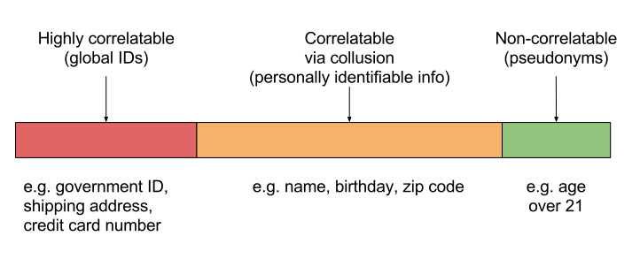

Credentials are a part of our daily lives; driver's licenses are used to
assert that we are capable of operating a motor vehicle, university degrees
can be used to assert our level of education, and government-issued passports
enable us to travel between countries. This specification provides a mechanism
to express these sorts of credentials on the Web in a way that is
cryptographically secure, privacy respecting, and machine-verifiable.
Status of This Document
This section describes the status of this
document at the time of its publication. Other documents may supersede
this document. A list of current W3C publications and the latest revision
of this technical report can be found in the
W3C technical reports index at
https://www.w3.org/TR/.
Comments regarding this document by the W3C Advisory Committee are welcome
before January 14th 2022, but readers should be aware that the comment period
regarding the rest of this document has ended and the Working Group is unlikley
to make substantive modifications to the specification at this stage.
Please file issues directly on
GitHub,
or send them to
public-vc-comments@w3.org
(subscribe,
archives).
The Working Group has received implementation feedback showing that there are at
least two implementations for each normative feature in the specification. The
group has obtained reports from fourteen (14) implementations. For details, see
the test suite and implementation
report.
GitHub Issues are preferred for
discussion of this specification.
A W3C Recommendation is a specification that, after extensive
consensus-building, has received the endorsement of the W3C and its
Members. W3C recommends the wide deployment of this specification as a
standard for the Web.
This document was produced by a group
operating under the
W3C Patent
Policy.
W3C maintains a
public list of any patent disclosures
made in connection with the deliverables of
the group; that page also includes
instructions for disclosing a patent. An individual who has actual
knowledge of a patent which the individual believes contains
Essential Claim(s)
must disclose the information in accordance with
section 6 of the W3C Patent Policy.
Credentials are a part of our daily lives; driver's licenses are used to
assert that we are capable of operating a motor vehicle, university degrees
can be used to assert our level of education, and government-issued passports
enable us to travel between countries. These credentials provide
benefits to us when used in the physical world, but their use on the Web
continues to be elusive.
Currently it is difficult to express education qualifications, healthcare
data, financial account details, and other sorts of third-party verified
machine-readable personal information on the Web. The difficulty of expressing
digital credentials on the Web makes it challenging to receive the same
benefits through the Web that physical credentials provide us in the
physical world.
This specification provides a standard way to express credentials on the
Web in a way that is cryptographically secure, privacy respecting, and
machine-verifiable.
For those unfamiliar with the concepts related to
verifiable credentials, the following sections provide an overview of:
The use cases and requirements that informed this specification.
1.1 What is a Verifiable Credential?
This section is non-normative.
In the physical world, a credential might consist of:
Information related to identifying the subject of the credential
(for example, a photo, name, or identification number)
Information related to the issuing authority (for example, a city government,
national agency, or certification body)
Information related to the type of credential this is (for example, a
Dutch passport, an American driving license, or a health insurance card)
Information related to specific attributes or properties being asserted by
the issuing authority about the subject (for example, nationality,
the classes of vehicle entitled to drive, or date of birth)
Evidence related to how the credential was derived
Information related to constraints on the credential (for example, expiration
date, or terms of use).
A verifiable credential can represent all of the same information that a
physical credential represents. The addition of technologies, such as
digital signatures, makes verifiable credentials more tamper-evident and
more trustworthy than their physical counterparts.
Both verifiable credentials and verifiable presentations can be
transmitted rapidly, making them more convenient than their physical
counterparts when trying to establish trust at a distance.
While this specification attempts to improve the ease of expressing digital
credentials, it also attempts to balance this goal with a number of
privacy-preserving goals. The persistence of digital information, and the ease
with which disparate sources of digital data can be collected and correlated,
comprise a privacy concern that the use of verifiable and easily
machine-readable credentials threatens to make worse. This document
outlines and attempts to address a number of these issues in Section
§ 7. Privacy Considerations. Examples of how to use this data model
using privacy-enhancing technologies, such as zero-knowledge proofs, are also
provided throughout this document.
1.2 Ecosystem Overview
This section is non-normative.
This section describes the roles of the core actors and the relationships
between them in an ecosystem where verifiable credentials are expected
to be useful. A role is an abstraction that might be implemented in many
different ways. The separation of roles suggests likely interfaces and
protocols for standardization. The following roles are introduced in this
specification:
A role an entity performs by receiving one or more
verifiable credentials, optionally inside a
verifiable presentation, for processing. Example verifiers include
employers, security personnel, and websites.
A role a system might perform by mediating the creation and verification
of identifiers, keys, and other relevant data, such as
verifiable credential schemas, revocation registries, issuer public keys,
and so on, which might be required to use verifiable credentials. Some
configurations might require correlatable identifiers for subjects.
Example verifiable data registries include trusted databases, decentralized
databases, government ID databases, and distributed ledgers. Often
there is more than one type of verifiable data registry utilized in an
ecosystem.
Figure 1
The roles and information flows forming the basis for this specification.
Note
Figure 1 above provides an example ecosystem in which to ground the
rest of the concepts in this specification. Other ecosystems exist, such as
protected environments or proprietary systems, where
verifiable credentials also provide benefit.
1.3 Use Cases and Requirements
This section is non-normative.
The Verifiable Credentials Use Cases document [VC-USECASES] outlines a number
of key topics that readers might find useful, including:
A more thorough explanation of the
roles
introduced above
The
needs
identified in market verticals, such as education, finance, healthcare, retail,
professional licensing, and government
Common
tasks
performed by the roles in the ecosystem, as well as their associated
requirements
As a result of documenting and analyzing the use cases document, the following
desirable ecosystem characteristics were identified for this specification:
The specification must provide a means for issuers to issue
verifiable credentials that support selective disclosure, without
requiring all conformant software to support that feature.
The processes of cryptographically protecting credentials and
presentations, and verifying verifiable credentials and
verifiable presentations, have to be deterministic, bi-directional, and
lossless. Any verification of a verifiable credential or
verifiable presentation has to be transformable to the generic data model
defined in this document in a deterministic process, such that the resulting
credential or presentation is semantically and syntactically
equivalent to the original construct, so that it can be processed in an
interoperable fashion.
Verifiable credentials and verifiable presentations have to be
serializable in one or more machine-readable data formats. The process of
serialization and/or de-serialization has to be deterministic, bi-directional,
and lossless. Any serialization of a verifiable credential or
verifiable presentation needs to be transformable to the generic data
model defined in this document in a deterministic process such that the
resulting verifiable credential can be processed in an interoperable
fashion. The serialized form also needs to be able to be generated from the data
model without loss of data or content.
The data model and serialization must be extendable with minimal coordination.
Issuers revoking verifiable credentials should distinguish between
revocation for cryptographic integrity (for example, the signing key is
compromised) versus revocation for a status change (for example, the driver’s
license is suspended).
As well as sections marked as non-normative, all authoring guidelines, diagrams, examples, and notes in this specification are non-normative. Everything else in this specification is normative.
The key words MAY, MUST, MUST NOT, RECOMMENDED, and SHOULD in this document
are to be interpreted as described in
BCP 14
[RFC2119] [RFC8174]
when, and only when, they appear in all capitals, as shown here.
A conforming document is any concrete expression of the data model
that complies with the normative statements in this specification.
Specifically, all relevant normative statements in Sections
§ 4. Basic Concepts, § 5. Advanced Concepts, and
§ 6. Syntaxes of this document MUST be enforced. A serialization
format for the conforming document MUST be deterministic, bi-directional,
and lossless as described in Section § 6. Syntaxes.
The conforming documentMAY be transmitted or stored in any such
serialization format.
A conforming processor is any algorithm realized as software and/or
hardware that generates or consumes a conforming document. Conforming
processors MUST produce errors when non-conforming documents are consumed.
This specification makes no normative statements with regard to the
conformance of roles in the ecosystem, such as issuers, holders,
or verifiers, because the conformance of ecosystem roles are highly
application, use case, and market vertical specific.
Digital proof mechanisms, a subset of which are digital signatures, are required
to ensure the protection of a verifiable credential. Having and
validating proofs, which may be dependent on the syntax of the proof
(for example, using the JSON Web Signature of a JSON Web Token for proofing a
key holder), are an essential part of processing a verifiable credential.
At the time of publication, Working Group members had implemented
verifiable credentials using at least three proof mechanisms:
JSON Web Tokens [RFC7519] secured using JSON Web Signatures [RFC7515]
Implementers are advised to note that not all proof mechanisms are standardized
as of the publication date of this specification. The group expects some of
these mechanisms, as well as new ones, to mature independently and become
standardized in time. Given there are multiple valid proof mechanisms, this
specification does not standardize on any single digital signature mechanism.
One of the goals of this specification is to provide a data model that can be
protected by a variety of current and future digital proof mechanisms.
Conformance to this specification does not depend on the details of a particular
proof mechanism; it requires clearly identifying the mechanism a
verifiable credential uses.
This document also contains examples that contain JSON and JSON-LD content.
Some of these examples contain characters that are invalid JSON, such as
inline comments (//) and the use of ellipsis (...)
to denote information that adds little value to the example. Implementers are
cautioned to remove this content if they desire to use the information as
valid JSON or JSON-LD.
2. Terminology
This section is non-normative.
The following terms are used to describe concepts in this specification.
A set of one or more claims made by an issuer. A
verifiable credential is a
tamper-evident credential that has authorship that can be cryptographically
verified. Verifiable credentials can be used to build
verifiable presentations, which can also be cryptographically verified.
The claims in a credential can be about different subjects.
data minimization
The act of limiting the amount of shared data strictly to the minimum
necessary to successfully accomplish a task or goal.
decentralized identifier
A portable URL-based identifier, also known as a DID,
associated with an entity. These identifiers are most often used in a
verifiable credential and are associated with subjects such that a
verifiable credential itself can be easily ported from one
repository to another without the need to reissue the credential.
An example of a DID is did:example:123456abcdef.
decentralized identifier document
Also referred to as a DID document, this is a document
that is accessible using a verifiable data registry and contains
information related to a specific decentralized identifier, such as the
associated repository and public key information.
derived predicate
A verifiable, boolean assertion about the value of another attribute in a
verifiable credential. These are useful in zero-knowledge-proof-style
verifiable presentations because they can limit information disclosure.
For example, if a verifiable credential contains an attribute
for expressing a specific height in centimeters, a derived predicate
might reference the height attribute in the verifiable credential
demonstrating that the issuer attests to a height value meeting the
minimum height requirement, without actually disclosing the specific height
value. For example, the subject is taller than 150 centimeters.
entity
A thing with distinct and independent existence, such as a person,
organization, or device that performs one or more roles in the ecosystem.
graph
A network of information composed of subjects and their relationship
to other subjects or data.
An identity provider, sometimes abbreviated as IdP, is a system
for creating, maintaining, and managing identity information for
holders, while providing authentication services to
relying party applications within a federation or distributed network.
In this case the holder is always the subject. Even if the
verifiable credentials are bearer credentials, it is assumed the
verifiable credentials remain with the subject, and if they are
not, they were stolen by an attacker. This specification does not use this term
unless comparing or mapping the concepts in this document to other
specifications. This specification decouples the identity provider
concept into two distinct concepts: the issuer and the holder.
Data derived from one or more verifiable credentials, issued by one or
more issuers, that is shared with a specific verifier. A
verifiable presentation
is a tamper-evident presentation encoded in such a way that authorship of the
data can be trusted after a process of cryptographic verification. Certain
types of verifiable presentations might contain data that is synthesized from,
but do not contain, the original verifiable credentials (for example,
zero-knowledge proofs).
A role a system might perform by mediating the creation and verification
of identifiers, keys, and other relevant data, such as
verifiable credential schemas, revocation registries, issuer public keys,
and so on, which might be required to use verifiable credentials. Some
configurations might require correlatable identifiers for subjects. Some
registries, such as ones for UUIDs and public keys, might just act as namespaces
for identifiers.
verification
The evaluation of whether a verifiable credential or verifiable presentation
is an authentic and timely statement of the issuer or presenter, respectively.
This includes checking that: the credential (or presentation) conforms to the specification; the proof method is
satisfied; and, if present, the status check succeeds.
A Uniform Resource Identifier, as defined by [RFC3986].
3. Core Data Model
This section is non-normative.
The following sections outline core data model concepts, such as claims,
credentials, and presentations, which form the foundation of this
specification.
3.1 Claims
This section is non-normative.
A claim is a statement about a subject. A subject is
a thing about which claims can be made. Claims are expressed using
subject-property-value
relationships.
Figure 2
The basic structure of a claim.
The data model for claims, illustrated in Figure 2
above, is powerful and can be used to express a large variety of statements. For
example, whether someone graduated from a particular university can be expressed
as shown in Figure 3 below.
Figure 3
A basic claim expressing that Pat is an alumni of "Example University".
Individual claims can be merged together to express a graph of
information about a subject. The example shown in
Figure 4 below extends the previous claim by
adding the claims that Pat knows Sam and that Sam is employed as a
professor.
Figure 4
Multiple claims can be combined to express a graph of information.
To this point, the concepts of a claim and a graph of information
are introduced. To be able to trust claims, more information is
expected to be added to the graph.
3.2 Credentials
This section is non-normative.
A credential is a set of one or more claims made by the same
entity. Credentials might also include an identifier and
metadata to describe properties of the credential, such as the
issuer, the expiry date and time, a representative image, a public key
to use for verification purposes, the revocation mechanism, and so on.
The metadata might be signed by the issuer. A
verifiable credential is a set of tamper-evident claims and
metadata that cryptographically prove who issued it.
Figure 5
Basic components of a verifiable credential.
Examples of verifiable credentials include digital employee
identification cards, digital birth certificates, and digital educational
certificates.
Note
Credential identifiers are often used to identify specific instances
of a credential. These identifiers can also be used for correlation. A
holder wanting to minimize correlation is advised to use a selective
disclosure scheme that does not reveal the credential identifier.
Figure 5 above shows the basic components of a
verifiable credential, but abstracts the details about how claims
are organized into information graphs, which are then organized into
verifiable credentials. Figure 6 below shows a
more complete depiction of a verifiable credential, which is normally
composed of at least two information graphs. The first graph
expresses the verifiable credential itself, which contains
credential metadata and
claims. The second
graph expresses the
digital proof, which is
usually a digital signature.
Figure 6
Information graphs associated with a basic verifiable credential.
Note
It is possible to have a credential, such as a marriage certificate,
containing multiple claims about different subjects that are not
required to be related.
Note
It is possible to have a credential that does not contain any
claims about the entity to which the credential was issued.
For example, a credential that only contains claims about a
specific dog, but is issued to its owner.
3.3 Presentations
This section is non-normative.
Enhancing privacy is a key design feature of this specification. Therefore, it
is important for entities using this technology to be able to express
only the portions of their persona that are appropriate for a given situation.
The expression of a subset of one's persona is called a
verifiable presentation. Examples of different personas include a
person's professional persona, their online gaming persona, their
family persona, or an incognito persona.
The data in a presentation is often about the same subject, but
might have been issued by multiple issuers. The aggregation of this
information typically expresses an aspect of a person, organization, or
entity.
Figure 7
Basic components of a verifiable presentation.
Figure 8 below shows a more complete depiction of a
verifiable presentation, which is normally composed of at least four
information graphs. The first of these information graphs, the
Presentation Graph, expresses the verifiable presentation
itself, which contains presentation metadata. The
verifiableCredential property in the Presentation Graph
refers to one or more verifiable credentials, each being one of the
second information graphs, i.e., a self-contained Credential
Graph), which in turn contains credential metadata and claims. The
third information graph, the Credential Proof Graph, expresses
the credential graph proof, which is usually a digital signature. The fourth
information graph, the Presentation Proof Graph, expresses the
presentation graph proof, which is usually a digital signature.
Figure 8
Information graphs associated with a basic verifiable presentation.
Note
It is possible to have a presentation, such as a business persona, which
draws on multiple credentials about different subjects that are
often, but not required to be, related.
To illustrate this lifecycle, we will use the example of redeeming an alumni
discount from a university. In the example below, Pat receives an alumni
verifiable credential from a university, and Pat stores the
verifiable credential in a digital wallet.
Example 1: A simple example of a verifiable credential
{
// set the context, which establishes the special terms we will be using
// such as 'issuer' and 'alumniOf'.
"@context": [
"https://www.w3.org/2018/credentials/v1",
"https://www.w3.org/2018/credentials/examples/v1"
],
// specify the identifier for the credential
"id": "http://example.edu/credentials/1872",
// the credential types, which declare what data to expect in the credential
"type": ["VerifiableCredential", "AlumniCredential"],
// the entity that issued the credential
"issuer": "https://example.edu/issuers/565049",
// when the credential was issued
"issuanceDate": "2010-01-01T19:23:24Z",
// claims about the subjects of the credential
"credentialSubject": {
// identifier for the only subject of the credential
"id": "did:example:ebfeb1f712ebc6f1c276e12ec21",
// assertion about the only subject of the credential
"alumniOf": {
"id": "did:example:c276e12ec21ebfeb1f712ebc6f1",
"name": [{
"value": "Example University",
"lang": "en"
}, {
"value": "Exemple d'Université",
"lang": "fr"
}]
}
},
// digital proof that makes the credential tamper-evident// see the NOTE at end of this section for more detail
"proof": {
// the cryptographic signature suite that was used to generate the signature
"type": "RsaSignature2018",
// the date the signature was created
"created": "2017-06-18T21:19:10Z",
// purpose of this proof
"proofPurpose": "assertionMethod",
// the identifier of the public key that can verify the signature
"verificationMethod": "https://example.edu/issuers/565049/keys/1",
// the digital signature value
"jws": "eyJhbGciOiJSUzI1NiIsImI2NCI6ZmFsc2UsImNyaXQiOlsiYjY0Il19..TCYt5X
sITJX1CxPCT8yAV-TVkIEq_PbChOMqsLfRoPsnsgw5WEuts01mq-pQy7UJiN5mgRxD-WUc
X16dUEMGlv50aqzpqh4Qktb3rk-BuQy72IFLOqV0G_zS245-kronKb78cPN25DGlcTwLtj
PAYuNzVBAh4vGHSrQyHUdBBPM"
}
}
Pat then attempts to redeem the alumni discount. The verifier, a ticket
sales system, states that any alumni of "Example University" receives a discount
on season tickets to sporting events. Using a mobile device, Pat starts the
process of purchasing a season ticket. A step in this process requests an alumni
verifiable credential, and this request is routed to Pat's digital wallet.
The digital wallet asks Pat if they would like to provide a previously issued
verifiable credential. Pat selects the alumni
verifiable credential, which is then composed into a
verifiable presentation. The verifiable presentation is sent to
the verifier and verified.
Example 2: A simple example of a verifiable presentation
{
"@context": [
"https://www.w3.org/2018/credentials/v1",
"https://www.w3.org/2018/credentials/examples/v1"
],
"type": "VerifiablePresentation",
// the verifiable credential issued in the previous example
"verifiableCredential": [{
"@context": [
"https://www.w3.org/2018/credentials/v1",
"https://www.w3.org/2018/credentials/examples/v1"
],
"id": "http://example.edu/credentials/1872",
"type": ["VerifiableCredential", "AlumniCredential"],
"issuer": "https://example.edu/issuers/565049",
"issuanceDate": "2010-01-01T19:23:24Z",
"credentialSubject": {
"id": "did:example:ebfeb1f712ebc6f1c276e12ec21",
"alumniOf": {
"id": "did:example:c276e12ec21ebfeb1f712ebc6f1",
"name": [{
"value": "Example University",
"lang": "en"
}, {
"value": "Exemple d'Université",
"lang": "fr"
}]
}
},
"proof": {
"type": "RsaSignature2018",
"created": "2017-06-18T21:19:10Z",
"proofPurpose": "assertionMethod",
"verificationMethod": "https://example.edu/issuers/565049/keys/1",
"jws": "eyJhbGciOiJSUzI1NiIsImI2NCI6ZmFsc2UsImNyaXQiOlsiYjY0Il19..TCYt5X
sITJX1CxPCT8yAV-TVkIEq_PbChOMqsLfRoPsnsgw5WEuts01mq-pQy7UJiN5mgRxD-WUc
X16dUEMGlv50aqzpqh4Qktb3rk-BuQy72IFLOqV0G_zS245-kronKb78cPN25DGlcTwLtj
PAYuNzVBAh4vGHSrQyHUdBBPM"
}
}],
// digital signature by Pat on the presentation
// protects against replay attacks
"proof": {
"type": "RsaSignature2018",
"created": "2018-09-14T21:19:10Z",
"proofPurpose": "authentication",
"verificationMethod": "did:example:ebfeb1f712ebc6f1c276e12ec21#keys-1",
// 'challenge' and 'domain' protect against replay attacks
"challenge": "1f44d55f-f161-4938-a659-f8026467f126",
"domain": "4jt78h47fh47",
"jws": "eyJhbGciOiJSUzI1NiIsImI2NCI6ZmFsc2UsImNyaXQiOlsiYjY0Il19..kTCYt5
XsITJX1CxPCT8yAV-TVIw5WEuts01mq-pQy7UJiN5mgREEMGlv50aqzpqh4Qq_PbChOMqs
LfRoPsnsgxD-WUcX16dUOqV0G_zS245-kronKb78cPktb3rk-BuQy72IFLN25DYuNzVBAh
4vGHSrQyHUGlcTwLtjPAnKb78"
}
}
Note
Implementers that are interested in understanding more about the
proof mechanism used above can learn more in Section § 4.7 Proofs (Signatures) and by reading the following specifications:
Linked Data Proofs [LD-PROOFS], Linked Data Cryptographic Suites
Registry[LDP-REGISTRY], and JSON Web Signature (JWS) Unencoded Payload Option
[RFC7797]. A list of proof mechanisms is available in the Verifiable
Credentials Extension Registry [VC-EXTENSION-REGISTRY].
4. Basic Concepts
This section introduces some basic concepts for the specification, in
preparation for Section § 5. Advanced Concepts later in the
document.
4.1 Contexts
When two software systems need to exchange data, they need to use terminology
that both systems understand. As an analogy, consider how two people
communicate. Both people must use the same language and the words they use must
mean the same thing to each other. This might be referred to as
the context of a conversation.
In JSON-LD, the @contextproperty can also be used to
communicate other details, such as datatype information, language information,
transformation rules, and so on, which are beyond the needs of this
specification, but might be useful in the future or to related work. For more
information, see
Section 3.1: The Context
of the [JSON-LD] specification.
The value of the @contextpropertyMUST be an ordered set
where the first item is a URI with the value
https://www.w3.org/2018/credentials/v1. For reference, a copy of
the base context is provided in Appendix § B. Base Context.
Subsequent items in the array MUST express context information and be composed
of any combination of URIs or objects. It is RECOMMENDED that each
URI in the @context be one which, if dereferenced, results
in a document containing machine-readable information about the
@context.
Note
Though this specification requires that a @contextproperty
be present, it is not required that the value of the @contextproperty be processed using JSON-LD. This is to support processing using
plain JSON libraries, such as those that might be used when the
verifiable credential is encoded as a JWT. All libraries or processors
MUST ensure that the order of the values in the @contextproperty is what is expected for the specific application. Libraries or
processors that support JSON-LD can process the @contextproperty using full JSON-LD processing as expected.
The example above uses the base context URI
(https://www.w3.org/2018/credentials/v1) to establish that the
conversation is about a verifiable credential. The second URI
(https://www.w3.org/2018/credentials/examples/v1) establishes that
the conversation is about examples.
Note
This document uses the example context URI
(https://www.w3.org/2018/credentials/examples/v1) for the purpose
of demonstrating examples. Implementations are expected to not use this
URI for any other purpose, such as in pilot or production systems.
The data available at https://www.w3.org/2018/credentials/v1 is a
static document that is never updated and SHOULD be downloaded and cached. The
associated human-readable vocabulary document for the Verifiable Credentials
Data Model is available at
https://www.w3.org/2018/credentials.
This concept is further expanded on in Section § 5.3 Extensibility.
4.2 Identifiers
When expressing statements about a specific thing, such as a person, product,
or organization, it is often useful to use some kind of identifier so that
others can express statements about the same thing. This specification defines
the optional idproperty for such identifiers. The
idproperty is intended to unambiguously refer to an object,
such as a person, product, or organization. Using the idproperty allows for the expression of statements about specific things in
the verifiable credential.
The idpropertyMUST express an identifier that others are
expected to use when expressing statements about a specific thing identified
by that identifier.
Developers should remember that identifiers might be harmful in scenarios
where pseudonymity is required. Developers are encouraged to read Section
§ 7.3 Identifier-Based Correlation carefully when considering such
scenarios. There are also other types of correlation mechanisms documented in
Section § 7. Privacy Considerations that create privacy concerns.
Where privacy is a strong consideration, the idpropertyMAY be omitted.
id
The value of the idpropertyMUST be a single URI.
It is RECOMMENDED that the URI in the id be one which, if
dereferenced, results in a document containing machine-readable information
about the id.
As of this publication, DIDs are a new type of identifier that are not
necessary for verifiable credentials to be useful. Specifically,
verifiable credentials do not depend on DIDs and DIDs do
not depend on verifiable credentials. However, it is expected that many
verifiable credentials will use DIDs and that software libraries
implementing this specification will probably need to resolve DIDs.
DID-based URLs are used for expressing identifiers associated with
subjects, issuers, holders, credential status lists,
cryptographic keys, and other machine-readable information associated with a
verifiable credential.
4.3 Types
Software systems that process the kinds of objects specified in this document
use type information to determine whether or not a provided
verifiable credential or verifiable presentation is appropriate.
This specification defines a typeproperty for the
expression of type information.
The value of the typepropertyMUST be, or map to (through
interpretation of the @context property), one or more URIs.
If more than one URI is provided, the URIsMUST be interpreted
as an unordered set. Syntactic conveniences SHOULD be used to ease developer
usage. Such conveniences might include JSON-LD terms. It is RECOMMENDED that
each URI in the type be one which, if dereferenced, results
in a document containing machine-readable information about the
type.
VerifiableCredential and, optionally, a more specific
verifiable credentialtype. For example, "type": ["VerifiableCredential", "UniversityDegreeCredential"]
VerifiableCredential and, optionally, a more specific
verifiable credentialtype. For example, "type": ["VerifiableCredential", "UniversityDegreeCredential"]
VerifiablePresentation and, optionally, a more specific
verifiable presentationtype. For example, "type": ["VerifiablePresentation", "CredentialManagerPresentation"]
VerifiablePresentation and, optionally, a more specific
verifiable presentationtype. For example, "type": ["VerifiablePresentation", "CredentialManagerPresentation"]
A valid evidence type. For example, "type": "DocumentVerification2018"
Note
The type system for the Verifiable Credentials Data Model is the same as
for [JSON-LD] and is detailed in
Section 5.4:
Specifying the Type and
Section 8: JSON-LD
Grammar. When using a JSON-LD context (see Section
§ 5.3 Extensibility), this specification aliases the
@type keyword to type to make the JSON-LD documents
more easily understood. While application developers and document authors do
not need to understand the specifics of the JSON-LD type system, implementers
of this specification who want to support interoperable extensibility, do.
All credentials, presentations, and encapsulated objects MUST
specify, or be associated with, additional more narrow types (like
UniversityDegreeCredential, for example) so software systems can
process this additional information.
When processing encapsulated objects defined in this specification, (for
example, objects associated with the credentialSubject object or
deeply nested therein), software systems SHOULD use the type information
specified in encapsulating objects higher in the hierarchy. Specifically, an
encapsulating object, such as a credential, SHOULD convey the associated
object types so that verifiers can quickly determine the contents
of an associated object based on the encapsulating object type.
For example, a credential object with the type of
UniversityDegreeCredential, signals to a verifier that the
object associated with the credentialSubject property contains the
identifier for the:
This enables implementers to rely on values associated with the
type property for verification purposes. The expectation of
types and their associated properties should be documented in at least a
human-readable specification, and preferably, in an additional machine-readable
representation.
Note
The type system used in the data model described in this specification allows
for multiple ways to associate types with data. Implementers and authors are
urged to read the section on typing in the Verifiable Credentials
Implementation Guidelines [VC-IMP-GUIDE].
The value of the credentialSubjectproperty is defined as
a set of objects that contain one or more properties that are each related to a
subject of the verifiable credential. Each object MAY contain an
id, as described in Section § 4.2 Identifiers.
Example 6: Usage of the credentialSubject property
It is possible to express information related to multiple subjects in a
verifiable credential. The example below specifies two subjects
who are spouses. Note the use of array notation to associate multiple
subjects with the credentialSubject property.
Example 7: Specifying multiple subjects in a verifiable credential
The value of the issuerpropertyMUST be either a
URI or an object containing an idproperty. It is
RECOMMENDED that the URI in the issuer or its
id be one which, if dereferenced, results in a document containing
machine-readable information about the issuer that can be used to
verify the information expressed in the credential.
The value of the issuerproperty can also be a JWK (for
example, "https://example.com/keys/foo.jwk") or a DID (for
example, "did:example:abfe13f712120431c276e12ecab").
4.6 Issuance Date
This specification defines the issuanceDateproperty for
expressing the date and time when a credential becomes valid.
issuanceDate
A credentialMUST have an issuanceDateproperty. The value of the
issuanceDatepropertyMUSTbe a string value of an [ RFC3339XMLSCHEMA11-2 ] combined date
and timedate-time
string representing the date and time the credential becomes valid, which could be a
date and time in the future. Note that this value represents the earliest point
in time at which the information associated with the
credentialSubjectproperty becomes valid.
It is expected that the next version of this specification will add the
validFromproperty and will deprecate the
issuanceDateproperty in favor of a new issuedproperty. The range of values for both properties are expected to remain
as [XMLSCHEMA11-2] combined
date-time strings. Implementers are advised that the
validFrom and issuedproperties are reserved
and use for any other purpose is discouraged.
This specification identifies two classes of proof mechanisms: external proofs
and embedded proofs. An external proof is one that wraps an
expression of this data model, such as a JSON Web Token, which is elaborated on
in Section § 6.3.1 JSON Web Token. An embedded proof is a
mechanism where the proof is included in the data, such as a Linked Data
Signature, which is elaborated upon in Section § 6.3.2 Linked Data Proofs.
When embedding a proof, the proofpropertyMUST be used.
proof
One or more cryptographic proofs that can be used to detect tampering and
verify the authorship of a credential or presentation. The
specific method used for an embedded proofMUST be included using the
typeproperty.
Because the method used for a mathematical proof varies by representation
language and the technology used, the set of name-value pairs that is expected
as the value of the proofproperty will vary accordingly.
For example, if digital signatures are used for the proof mechanism, the
proofproperty is expected to have name-value pairs that
include a signature, a reference to the signing entity, and a representation of
the signing date. The example below uses RSA digital signatures.
Example 11: Usage of the proof property on a verifiable credential
As discussed in Section § 1.4 Conformance, there are multiple viable
proof mechanisms, and this specification does not standardize nor recommend any
single proof mechanism for use with verifiable credentials. For more
information about the proof mechanism, see the following
specifications: Linked Data Proofs [LD-PROOFS], Linked Data Cryptographic
Suites Registries [LDP-REGISTRY], and JSON Web Signature (JWS) Unencoded
Payload Option [RFC7797]. A list of proof mechanisms is available in the
Verifiable Credentials Extension Registry [VC-EXTENSION-REGISTRY].
4.8 Expiration
This specification defines the expirationDateproperty for
the expression of credential expiration information.
expirationDate
If present, the value of the expirationDatepropertyMUST
be a string value of an [ RFC3339XMLSCHEMA11-2 ] combined date and time stringdate-time representing the date and time
the credential ceases to be valid.
It is expected that the next version of this specification will add the
validUntilproperty in a way that deprecates, but
preserves backwards compatability with the expirationDateproperty. Implementers are advised that the validUntilproperty is reserved and its use for any other purpose is discouraged.
4.9 Status
This specification defines the following credentialStatusproperty for the discovery of information about the current status of a
verifiable credential, such as whether it is suspended or revoked.
credentialStatus
If present, the value of the credentialStatuspropertyMUST
include the following:
typeproperty, which expresses the credential status
type (also referred to as the credential status method). It is expected
that the value will provide enough information to determine the current status
of the credential. For example, the object could contain a link to an
external document noting whether or not the credential is suspended or
revoked.
The precise contents of the credential status information is determined
by the specific credentialStatustype definition, and varies
depending on factors such as whether it is simple to implement or if it is
privacy-enhancing.
Defining the data model, formats, and protocols for status schemes are out of
scope for this specification. A Verifiable Credential Extension Registry
[VC-EXTENSION-REGISTRY] exists that contains available status schemes
for implementers who want to implement verifiable credential
status checking.
The idproperty is optional and MAY be used to provide a
unique identifier for the presentation. For details related to the use of
this property, see Section § 4.2 Identifiers.
type
The typeproperty is required and expresses the
type of presentation, such as VerifiablePresentation. For
details related to the use of this property, see Section § 4.3 Types.
Some zero-knowledge cryptography schemes might enable holders to
indirectly prove they hold claims from a verifiable credential
without revealing the verifiable credential itself. In these schemes, a
claim from a verifiable credential might be used to derive a
presented value, which is cryptographically asserted such that a verifier
can trust the value if they trust the issuer.
For example, a verifiable credential containing the claimdate of birth might be used to derive the presented value
over the age of 15 in a manner that is cryptographically
verifiable. That is, a verifier can still trust the derived value
if they trust the issuer.
Selective disclosure schemes using zero-knowledge proofs can use claims
expressed in this model to prove additional statements about those claims.
For example, a claim specifying a subject's date of birth can be
used as a predicate to prove the subject's age is within a given range,
and therefore prove the subject qualifies for age-related discounts,
without actually revealing the subject's birthdate. The holder
has the flexibility to use the claim in any way that is applicable to
the desired verifiable presentation.
Figure 9
A basic claim expressing that Pat's date of birth is January 1, 2010. Date
encoding would be determined by the schema.
The order of the actions above is not fixed, and some actions might be taken
more than once. Such action-recurrence might be immediate or at any later
point.
The most comon sequence of actions is envisioned to be:
This specification does not define any protocol for transfering
verifiable credentials or verifiable presentations, but assuming
other specifications do specify how they are transferred between entities, then
this Verifiable Credential Data Model is directly applicable.
Have been transmitted in a way clearly establishing that the issuer
generated the verifiable credential and that the
verifiable credential was not tampered with in transit or storage. This
trust could be weakened depending on the risk assessment of the verifier.
The holder trusts the repository to store credentials
securely, to not release them to anyone other than the holder, and to not
corrupt or lose them while they are in its care.
This trust model differentiates itself from other trust models by ensuring
the:
By decoupling the trust between the identity provider and the
relying party a more flexible and dynamic trust model is created such
that market competition and customer choice is increased.
For more information about how this trust model interacts with various threat
models studied by the Working Group, see the Verifiable Credentials Use Cases
document [VC-USECASES].
Note
The data model detailed in this specification does not imply a transitive trust
model, such as that provided by more traditional Certificate Authority trust
models. In the Verifiable Credentials Data Model, a verifier either
directly trusts or does not trust an issuer. While it is possible to
build transitive trust models using the Verifiable Credentials Data Model,
implementers are urged to
learn
about the security weaknesses introduced by
broadly
delegating trust in the manner adopted by Certificate Authority systems.
5.3 Extensibility
One of the goals of the Verifiable Credentials Data Model is to enable
permissionless innovation. To achieve this, the data model needs to be
extensible in a number of different ways. The data model is required to:
Model complex multi-entity relationships through the use of a graph-based
data model.
Extend the machine-readable vocabularies used to describe information in the
data model, without the use of a centralized system for doing so, through the
use of [LINKED-DATA].
Support multiple types of cryptographic proof formats through the use of
Linked Data Proofs [LD-PROOFS] and a variety of signature suites listed
in the Linked Data Cryptographic Suites Registry [LDP-REGISTRY]
Provide all of the extensibility mechanisms outlined above in a data format that
is popular with software developers and web page authors, and is enabled through
the use of [JSON-LD].
This approach to data modeling is often called an
open world assumption, meaning that any entity can say anything about
any other entity. While this approach seems to conflict with building simple and
predictable software systems, balancing extensibility with program correctness
is always more challenging with an open world assumption than with closed
software systems.
The rest of this section describes, through a series of examples, how both
extensibility and program correctness are achieved.
This verifiable credential states that the entity associated with
did:example:abcdef1234567 has a name with a value of
Jane Doe.
Now let us assume a developer wants to extend the verifiable credential
to store two additional pieces of information: an internal corporate reference
number, and Jane's favorite food.
The first thing to do is to create a JSON-LD context containing two new terms,
as shown below.
After this JSON-LD context is created, the developer publishes it somewhere so
it is accessible to verifiers who will be processing the
verifiable credential. Assuming the above JSON-LD context is published at
https://example.com/contexts/mycontext.jsonld, we can extend this
example by including the context and adding the new properties and
credentialtype to the verifiable credential.
Example 17: A verifiable credential with a custom extension
This example demonstrates extending the Verifiable Credentials Data Model in a
permissionless and decentralized way. The mechanism shown also ensures that
verifiable credentials created in this way provide a mechanism to prevent
namespace conflicts and semantic ambiguity.
A dynamic extensibility model such as this does increase the implementation
burden. Software written for such a system has to determine whether
verifiable credentials with extensions are acceptable based on the risk
profile of the application. Some applications might accept only certain
extensions while highly secure environments might not accept any extensions.
These decisions are up to the developers of these applications and are
specifically not the domain of this specification.
Developers are urged to ensure that extension JSON-LD contexts are highly
available. Implementations that cannot fetch a context will produce an error.
Strategies for ensuring that extension JSON-LD contexts are always available
include using content-addressed URLs for contexts, bundling context documents
with implementations, or enabling aggressive caching of contexts.
Implementers are advised to pay close attention to the extension points in this
specification, such as in Sections § 4.7 Proofs (Signatures),
§ 4.9 Status, § 5.4 Data Schemas,§ 5.5 Refreshing,
§ 5.6 Terms of Use, and § 5.7 Evidence. While this
specification does not define concrete implementations for those extension
points, the Verifiable Credentials Extension Registry [VC-EXTENSION-REGISTRY]
provides an unofficial, curated list of extensions that developers can use from
these extension points.
5.3.1 Semantic Interoperability
This specification ensures that "plain" JSON and JSON-LD syntaxes are
semantically compatible without requiring JSON implementations to use a JSON-LD
processor. To achieve this, the specification imposes the following additional
requirements on both syntaxes:
JSON-based processors MUST process the @context key, ensuring the
expected values exist in the expected order for the credential type being
processed. The order is important because keys used in a credential,
which are defined using the values associated with @context, are
defined using a "first defined wins" mechanism and changing the order might
result in a different key definition "winning".
JSON-LD-based processors MUST produce an error when a JSON-LD context redefines
any term in the
active context.
The only way to change the definition of existing terms is to introduce a new
term that clears the active context within the scope of that new term. Authors
that are interested in this feature should read about the
@protected feature in the JSON-LD 1.1 specification.
A human-readable document describing the expected order of values for the
@contextproperty is expected to be published by any
implementer seeking interoperability. A machine-readable description
(that is, a normal JSON-LD Context document) is expected to be published
at the URL specified in the @contextproperty by
JSON-LD implementers seeking interoperability.
The requirements above guarantee semantic interoperability between JSON and
JSON-LD for terms defined by the @context mechanism. While JSON-LD
processors will use the specific mechanism provided and can verify that all
terms are correctly specified, JSON-based processors implicitly accept the same
set of terms without testing that they are correct. In other words, the context
in which the data exchange happens is explicitly stated for both JSON and
JSON-LD by using the same mechanism. With respect to JSON-based processors, this
is achieved in a lightweight manner, without having to use JSON-LD processing
libraries.
5.4 Data Schemas
Data schemas are useful when enforcing a specific structure on a given
collection of data. There are at least two types of data schemas that this
specification considers:
Data verification schemas, which are used to verify that the structure
and contents of a credential or verifiable credential conform to a
published schema.
Data encoding schemas, which are used to map the contents of a
verifiable credential to an alternative representation format, such as a
binary format used in a zero-knowledge proof.
It is important to understand that data schemas serve a different purpose from
the @context property, which neither enforces data structure or
data syntax, nor enables the definition of arbitrary encodings to alternate
representation formats.
This specification defines the following property for the expression of a
data schema, which can be included by an issuer in
the verifiable credentials that it issues:
credentialSchema
The value of the credentialSchemapropertyMUST be one or
more data schemas that provide verifiers with enough information to
determine if the provided data conforms to the provided schema. Each
credentialSchemaMUST specify its type (for example,
JsonSchemaValidator2018), and an idproperty
that MUST be a URI identifying the schema file. The precise contents of
each data schema is determined by the specific type definition.
Note
The credentialSchemaproperty provides an opportunity to
annotate type definitions or lock them to specific versions of the vocabulary.
Authors of verifiable credentials can include a static version of their
vocabulary using credentialSchema that is locked to some content
integrity protection mechanism. The credentialSchemaproperty also makes it possible to perform syntactic checking on the
credential and to use verification mechanisms such as JSON Schema
[JSON-SCHEMA-2018] validation.
Example 18: Usage of the credentialSchema property to perform JSON schema validation
For information about linkages to JSON Schema [JSON-SCHEMA-2018] or other
optional verification mechanisms, see the Verifiable Credentials
Implementation Guidelines [VC-IMP-GUIDE] document.
Data schemas can also be used to specify mappings to other binary formats, such
as those used to perform zero-knowledge proofs. For more information on using
the credentialSchemaproperty with zero-knowledge proofs,
see Section § 5.8 Zero-Knowledge Proofs.
Example 19: Usage of the credentialSchema property to perform zero-knowledge validation
In the example above, the issuer is specifying a
credentialSchema pointing to a zero-knowledge packed binary data
format that is capable of transforming the input data into a format, which can
then be used by a verifier to determine if the proof provided with the
verifiable credential is valid.
5.5 Refreshing
It is useful for systems to enable the manual or automatic refresh of an
expired verifiable credential. For more information about expired
verifiable credentials, see Section § 4.8 Expiration. This
specification defines a refreshServiceproperty, which
enables an issuer to include a link to a refresh service.
The refresh service is only expected to be used when either the
credential has expired or the issuer does not publish
credential status information. Issuers are advised not to put the
refreshServiceproperty in a verifiable credential
that does not contain public information or whose refresh service is not
protected in some way.
The value of the refreshServicepropertyMUST
be one or more refresh services that provides enough information to the
recipient's software such that the recipient can refresh the verifiable credential. Each
refreshService value MUST specify its
type (for example, ManualRefreshService2018)
and its id, which is the URL URI of the service. The precise content of each refresh
service is determined by the specific refreshServicetype definition.
Example 20: Usage of the refreshService property by an issuer
In the example above, the issuer specifies a manual
refreshService that can be used by directing the holder or
the verifier to https://example.edu/refresh/3732.
The value of the termsOfUseproperty tells the
verifier what actions it is required to perform (an obligation),
not allowed to perform (a prohibition), or allowed to perform (a
permission) if it is to accept the verifiable credential or
verifiable presentation.
The value of the termsOfUsepropertyMUST specify one or
more terms of use policies under which the creator issued the credential
or presentation. If the recipient (a holder or
verifier) is not willing to adhere to the specified terms of use, then
they do so on their own responsibility and might incur legal liability if they
violate the stated terms of use. Each termsOfUse value MUST specify
its type, for example, IssuerPolicy, and MAY specify its
instance id. The precise contents of each term of use is determined
by the specific termsOfUsetype definition.
Example 21: Usage of the termsOfUse property by an issuer
Warning: The termsOfUse property is improperly defined within the
VerifiablePresentation scoped context. This is a bug with the
version 1 context and will be fixed in the version 2 context. In the meantime,
implementors who wish to use this feature will be required to extend the context
of their verifiable presentation with an additional term that defines the
termsOfUse property, which can then be used alongside the
verifiable presentation type property, in order for the term to be
semantically recognized in a JSON-LD processor.
In the example above, the holder (the assigner), who is
also the subject, expressed a term of use prohibiting the verifier
(the assignee, https://wineonline.example.org) from
using the information provided to correlate the holder or subject
using a third-party service. If the verifier were to use a third-party
service for correlation, they would violate the terms under which the
holder created the presentation.
This feature is also expected to be used by government-issued
verifiable credentials to instruct digital wallets to limit their use to
similar government organizations in an attempt to protect citizens from
unexpected usage of sensitive data. Similarly, some
verifiable credentials issued by private industry are expected to limit
usage to within departments inside the organization, or during business hours.
Implementers are urged to read more about this rapidly evolving feature in the
appropriate section of the Verifiable Credentials Implementation Guidelines
[VC-IMP-GUIDE] document.
5.7 Evidence
Evidence can be included by an issuer to provide the verifier with
additional supporting information in a verifiable credential. This could
be used by the verifier to establish the confidence with which it relies
on the claims in the verifiable credential.
For example, an issuer could check physical documentation provided by the
subject or perform a set of background checks before issuing the
credential. In certain scenarios, this information is useful to the
verifier when determining the risk associated with relying on a given
credential.
This specification defines the evidenceproperty for
expressing evidence information.
evidence
The value of the evidencepropertyMUST be one or more
evidence schemes providing enough information for a verifier to determine
whether the evidence gathered by the issuer meets its confidence
requirements for relying on the credential. Each evidence scheme is
identified by its type. The idproperty is optional,
but if present, SHOULD contain a URL that points to where more information about
this instance of evidence can be found. The precise content of each evidence
scheme is determined by the specific evidencetype
definition.
Note
For information about how attachments and references to credentials and
non-credential data might be supported by the specification, see the
Verifiable Credentials Implementation Guidelines [VC-IMP-GUIDE] document.
In this evidence example, the issuer is asserting that they
physically matched the subject of the credential to a physical
copy of a driver's license with the stated license number. This driver's license
was used in the issuance process to verify that "Example University" verified
the subject before issuance of the credential and how they did so (physical
verification).
Note
The evidenceproperty provides different and complementary
information to the proofproperty. The evidenceproperty is used to express supporting information, such as documentary
evidence, related to the integrity of the verifiable credential. In
contrast, the proofproperty is used to express
machine-verifiable mathematical proofs related to the authenticity of the
issuer and integrity of the verifiable credential. For more
information about the proofproperty, see Section
§ 4.7 Proofs (Signatures).
5.8 Zero-Knowledge Proofs
A zero-knowledge proof is a cryptographic method where an entity can prove to
another entity that they know a certain value without disclosing the actual
value. A real-world example is proving that an accredited university has
granted a degree to you without revealing your identity or any other personally
identifiable information contained on the degree.
The key capabilities introduced by zero-knowledge proof mechanisms are the
ability of a holder to:
This specification describes a data model that supports selective disclosure
with the use of zero-knowledge proof mechanisms. The examples below highlight
how the data model can be used to issue, present, and verify zero-knowledge
verifiable credentials.
For a holder to use a zero-knowledge verifiable presentation,
they need an issuer to have issued a verifiable credential in a manner
that enables the holder to derive a proof from the originally issued
verifiable credential, so that the holder can present the
information to a verifier in a privacy-enhancing manner.
This implies that the holder can prove the validity of the
issuer's signature without revealing the values that were signed, or when
only revealing certain selected values. The standard practice is to do so by
proving knowledge of the signature, without revealing the signature itself.
There are two requirements for verifiable credentials when they are to be
used in zero-knowledge proof systems.
The verifiable
credentialMUST contain a:
Credential definition, a Proof, using the
credentialSchema proofproperty, so that
the holder can be used by all
partiesderive a verifiable
presentationthat reveals only the information
than the holderintendsto perform
various cryptographic operations in zero-knowledge.reveal.
Proof, using If a credentialdefinition is being used, the credentialdefinition MUSTbe
defined inthe proof credentialSchemaproperty, so that
itcan be used by
all parties to derive verifiable presentations that
present information contained in the original verifiable credential perform various cryptographic operations in
zero-knowledge. The zero-knowledge verifiable presentation
must not reveal any information not intended to be revealed by the holder
.
The following example shows one method of using verifiable credentials in
zero-knowledge. It makes use of a Camenisch-Lysyanskaya Signature
[CL-SIGNATURES], which allows the presentation of the verifiable
credential in a way that supports the privacy of the
holder and subject through the use of selective disclosure of the
verifiable credential values. Some other cryptographic systems which rely
upon zero-knowledge proofs to selectively disclose attributes can be found in the
[LDP-REGISTRY] as well.
Example 24: A verifiable credential that supports CL Signatures
The example above provides the verifiable credential definition by using
the credentialSchemaproperty and a specific proof that is
usable in the Camenisch-Lysyanskaya Zero-Knowledge Proof system.
Each derived verifiable credential within
a verifiable presentationMUSThave a credentialSchema property . This allows contain all information necessary to verify the
derivedverifiable credential to reference,
either by including it directly within the
credential definition used to generate credential, or by referencing the derived proof. necessary information.
Figure 11
A visual example of the relationship between credentials and derived
credentials in a ZKP presentation.
Note
Important details regarding the format for the credential definition and
of the proofs are omitted on purpose because they are outside of the scope of
this document. The purpose of this section is to guide implementers who want to
extend verifiable credentials and verifiable presentations to
support zero-knowledge proof systems.
5.9 Disputes
There are at least two different cases to consider for an entity
wanting to dispute a credential issued by an issuer:
A subject disputes a claim made by the issuer. For example, the
addressproperty is incorrect or out of date.
An entity disputes a potentially false claim made by the issuer
about a different subject. For example, an imposter claims the social
security number for an entity.
The mechanism for issuing a DisputeCredential is the same as
for a regular credential except that the credentialSubject
identifier in the DisputeCredentialproperty is the
identifier of the disputed credential.
For example, if a credential with an identifier of
https://example.org/credentials/245 is disputed, the subject
can issue the credential shown below and present it to the
verifier along with the disputed credential.
If a credential does not have an identifier, a content-addressed
identifier can be used to identify the disputed credential. Similarly,
content-addressed identifiers can be used to uniquely identify individual
claims.
Note
This area of study is rapidly evolving and developers that are interested in
publishing credentials that dispute the veracity of other
credentials are urged to read the section related to disputes in the
Verifiable Credentials Implementation Guidelines [VC-IMP-GUIDE] document.
5.10 Authorization
This section is non-normative.
Verifiable credentials are intended as a means of reliably identifying
subjects. While it is recognized that Role Based Access Controls (RBACs)
and Attribute Based Access Controls (ABACs) rely on this identification as a
means of authorizing subjects to access resources, this specification
does not provide a complete solution for RBAC or ABAC. Authorization is not an
appropriate use for this specification without an accompanying authorization
framework.
The Working Group did consider authorization use cases during the creation of
this specification and is pursuing that work as an architectural layer built
on top of this specification.
6. Syntaxes
The data model as described in Sections
§ 3. Core Data Model, § 4. Basic Concepts, and
§ 5. Advanced Concepts is the canonical structural representation of
a verifiable credential or verifiable presentation. All
serializations are representations of that data model in a specific format. This
section specifies how the data model is realized in JSON-LD and plain JSON.
Although syntactic mappings are provided for only these two syntaxes,
applications and services can use any other data representation syntax (such as
XML, YAML, or CBOR) that is capable of expressing the data model. As the
verification and validation requirements are defined in terms of
the data model, all serialization syntaxes have to be deterministically
translated to the data model for processing, validation, or comparison.
This specification makes no requirements for support of any specific
serialization format.
The expected arity of the property values in this specification, and the
resulting datatype which holds those values, can vary depending on the property.
If present, the following properties are represented as a single value:
All other properties, if present, are represented as either a single value
or an array of values.
6.1 JSON
The data model, as described in Section § 3. Core Data Model, can be
encoded in Javascript Object Notation (JSON) [RFC8259] by mapping property
values to JSON types as follows:
Numeric values representable as IEEE754 SHOULD be represented as a Number type.
Boolean values SHOULD be represented as a Boolean type.
Sequence value SHOULD be represented as an Array type.
Unordered sets of values SHOULD be represented as an Array type.
Sets of propertiesSHOULD be represented as an Object type.
Empty values SHOULD be represented as a null value.
Other values MUST be represented as a String type.
Note
As the transformations listed herein have potentially incompatible
interpretations, additional profiling of the JSON format is required to provide
a deterministic transformation to the data model.
6.2 JSON-LD
[JSON-LD] is a JSON-based format used to serialize
Linked Data. The
syntax is designed to easily integrate into deployed systems already using JSON,
and provides a smooth upgrade path from JSON to [JSON-LD]. It is primarily
intended to be a way to use Linked Data in Web-based programming environments,
to build interoperable Web services, and to store Linked Data in JSON-based
storage engines.
[JSON-LD] is useful when extending the data model described in this
specification. Instances of the data model are encoded in [JSON-LD] in the
same way they are encoded in JSON (Section § 6.1 JSON), with the
addition of the @contextproperty. The
JSON-LD context
is described in detail in the [JSON-LD] specification and its use is
elaborated on in Section § 5.3 Extensibility.
Multiple contexts MAY be used or combined to express any arbitrary information
about verifiable credentials in idiomatic JSON. The
JSON-LD context,
available at https://www.w3.org/2018/credentials/v1, is a static
document that is never updated and can therefore be downloaded and cached client
side. The associated vocabulary document for the Verifiable Credentials Data
Model is available at https://www.w3.org/2018/credentials.
6.2.1 Syntactic Sugar
In general, the data model and syntaxes described in this document are
designed such that developers can copy and paste examples to incorporate
verifiable credentials into their software systems. The design goal of
this approach is to provide a low barrier to entry while still ensuring global
interoperability between a heterogeneous set of software systems. This section
describes some of these approaches, which will likely go unnoticed by most
developers, but whose details will be of interest to implementers. The most
noteworthy syntactic sugars provided by [JSON-LD] are:
The @id and @type keywords are aliased to
id and type respectively, enabling developers to use
this specification as idiomatic JSON.
Data types, such as integers, dates, units of measure, and URLs, are
automatically typed to provide stronger type guarantees for use cases that
require them.
The verifiableCredential and proofproperties
are treated as graph containers. That is, mechanisms used to isolate
sets of data asserted by different entities. This ensures, for example, proper
cryptographic separation between the data graph provided by each issuer
and the one provided by the holder presenting the
verifiable credential to ensure the provenance of the information for
each graph is preserved.
The @protected properties feature of [JSON-LD] 1.1 is used to
ensure that terms defined by this specification cannot be overridden. This means
that as long as the same @context declaration is made at the top of
a verifiable credential or verifiable presentation,
interoperability is guaranteed for all terms understood by users of the data
model whether or not they use a [JSON-LD] processor.
6.3 Proof Formats
The data model described in this specification is designed to be proof format
agnostic. This specification does not normatively require any particular digital
proof or signature format. While the data model is the canonical representation
of a verifiable credential or verifiable presentation, the
proofing mechanisms for these are often tied to the syntax used in the
transmission of the document between parties. As such, each proofing mechanism
has to specify whether the validation of the proof is calculated against the
state of the document as transmitted, against the transformed data model, or
against another form. At the time of publication, at least two proof formats
are being actively utilized by implementers and the Working Group felt
that documenting what these proof formats are and how they are being used would
be beneficial to implementers. The sections detailing the current proof formats
being actively utilized to issue verifiable credentials are:
JSON Web Token (JWT) [RFC7519] is still a widely used means to express
claims to be transferred between two parties. Providing a representation
of the Verifiable Credentials Data Model for JWT allows existing systems and
libraries to participate in the ecosystem described in Section
§ 1.2 Ecosystem Overview. A JWT encodes a set of claims as a
JSON object that is contained in a JSON Web Signature (JWS) [RFC7515] or JWE
[RFC7516]. For this specification, the use of JWE is out of scope.
Relation to the Verifiable Credentials Data Model
This specification defines encoding rules of the Verifiable Credential Data
Model onto JWT and JWS. It further defines processing rules how and when to make
use of specific JWT-registered claim names and specific JWS-registered
header parameter names to allow systems based on JWT to comply with this
specification. If these specific claim names and header parameters are
present, their respective counterpart in the standard
verifiable credential and verifiable presentationMAY be omitted
to avoid duplication.
JSON Web Token Extensions
This specification introduces two new registered claim names, which
contain those parts of the standard verifiable credentials and
verifiable presentations where no explicit encoding rules for JWT exist.
These objects are enclosed in the JWT payload as follows:
If no explicit rule is specified, properties are encoded in the same way
as with a standard verifiable credential, and are added to the
vc JWT claim. As with all JWTs, the JWS-based
signature of a verifiable credential represented in the JWT syntax is
calculated against the literal JWT string value as presented across the wire,
before any decoding or transformation rules are applied. The following
paragraphs describe these encoding rules.
If no JWS is present, a proofpropertyMUST be provided.
The proofproperty can be used to represent a more complex
proof, as may be necessary if the creator is different from the issuer,
or a proof not based on digital signatures, such as Proof of Work. The
issuerMAY include both a JWS and a proofproperty.
For backward compatibility reasons, the issuer MUST use JWS to represent proofs
based on a digital signature.
The following rules apply to JOSE headers in the context of this specification:
algMUST be set for digital signatures. If only the
proofproperty is needed for the chosen signature
method (that is, if there is no choice of algorithm within that method),
the alg header MUST be set to none.
kidMAY be used if there are multiple keys associated with the
issuer of the JWT. The key discovery is out of the scope of this
specification. For example, the kid can refer to a key in a
DID document, or can be the identifier of a key inside a JWKS.
typ, if present, MUST be set to JWT.
For backward compatibility with JWT processors, the following registered JWT
claim names MUST be used instead of, or in addition to, their respective
standard verifiable credential counterparts:
expMUST represent the expirationDateproperty,
encoded as a UNIX timestamp (NumericDate).
issMUST represent the issuerproperty of a
verifiable credential or the holderproperty of a
verifiable presentation.
nbfMUST represent issuanceDate, encoded as a UNIX
timestamp (NumericDate).
Other JOSE header parameters and JWT claim names not specified herein can be
used if their use is not explicitly discouraged. Additional
verifiable credentialclaimsMUST be added to the
credentialSubject property of the JWT.
Note
For more information about using JOSE header parameters and/or JWT
claim names not specified herein, see the Verifiable Credentials Implementation
Guidelines [VC-IMP-GUIDE] document.
This version of the specification defines no JWT-specific encoding rules for
the concepts outlined in Section
Advanced Concepts (for example,
refreshService, termsOfUse, and
evidence). These concepts can be encoded as they are without any
transformation, and can be added to the vc JWT claim.
Note
Implementers are warned that JWTs are not capable of encoding multiple
subjects and are thus not capable of encoding a
verifiable credential with more than one subject. JWTs might
support multiple subjects in the future and implementers are advised to refer
to the
JSON Web Token Claim Registry for multi-subject JWT claim names or
the
Nested JSON Web Token specification.
JWT Decoding
To decode a JWT to a standard verifiable credential, the following
transformation MUST be performed:
Create a JSON object.
Add the content from the vcclaim to the new JSON object.
Transform the remaining JWT specific headers and claims, and add the
results to the new JSON object.
To transform the JWT specific headers and claims, the following MUST be
done:
If exp is present, the UNIX timestamp MUST
be converted to an [ RFC3339XMLSCHEMA11-2 ] date-time, and MUST be used to set the value of the
expirationDateproperty of
credentialSubject of the new JSON object.
If iss is present, the value MUST be used to set the
issuerproperty of the new verifiable credential JSON object
or the holderproperty of the new verifiable presentation JSON object.
If nbf is present, the UNIX timestamp MUST
be converted to an [ RFC3339XMLSCHEMA11-2 ] date-time, and MUST be used to set the value of the
issuanceDatepropertyof the new JSON object.
If sub is present, the value MUST be used to set the value of the
idproperty of credentialSubject of the new
JSON object.
If jti is present, the value MUST be used to set the value of the
idproperty of the new JSON object.
Example 27: JWT header of a JWT-based verifiable credential using JWS as a proof (non-normative)
In the example above, the verifiable credential uses a
proof based on JWS digital signatures, and the
corresponding verification key can be obtained using the kid
header parameter.
Example 28: JWT payload of a JWT-based verifiable credential using JWS as a proof (non-normative)
In the example above, vc does not contain the idproperty because the JWT encoding uses the jti
attribute to represent a unique identifier. The sub attribute
encodes the information represented by the idproperty of
credentialSubject.
Example 29: Verifiable credential using JWT compact serialization (non-normative)
In the example above, the verifiable presentation uses a
proof based on JWS digital signatures, and the
corresponding verification key can be obtained using the kid
header parameter.
Example 31: JWT payload of a JWT based verifiable presentation (non-normative)
In the example above, vp does not contain the idproperty because the JWT encoding uses the jti
attribute to represent a unique identifier. verifiableCredential
contains a string array of verifiable credentials using
JWT compact serialization.
Example 32: Verifiable presentation using JWT compact serialization (non-normative)
This specification utilizes Linked Data to publish information on the Web
using standards, such as URLs and JSON-LD, to identify subjects and
their associated properties. When information is presented in this manner,
other related information can be easily discovered and new information can be
easily merged into the existing graph of knowledge. Linked Data is
extensible in a decentralized way, greatly reducing barriers to large scale
integration. The data model in this specification works well with the
Linked Data Proofs and
the associated Linked Data
Cryptographic Suites
which are designed to protect the data model as described by this specification.
Unlike the use of JSON Web Token, no extra pre- or post-processing is necessary.
The Linked Data Proofs format was designed to simply and easily protect
verifiable credentials and verifiable presentations. Protecting
a verifiable credential or verifiable presentation is as simple
as passing a valid example in this specification to a Linked Data Signatures
implementation and generating a digital signature.
Note
For more information about the different qualities of the various syntax
formats (for example, JSON+JWT, JSON-LD+JWT, or JSON-LD+LD-Proofs), see the
Verifiable Credentials Implementation Guidelines [VC-IMP-GUIDE] document.
7. Privacy Considerations
This section is non-normative.
This section details the general privacy considerations and specific privacy
implications of deploying the Verifiable Credentials Data Model into production
environments.
7.1 Spectrum of Privacy
This section is non-normative.
It is important to recognize there is a spectrum of privacy ranging from
pseudonymous to strongly identified. Depending on the use case, people have
different comfort levels about what information they are willing to provide
and what information can be derived from what is provided.

Figure 12
Privacy spectrum ranging from pseudonymous to fully identified.
For example, most people probably want to remain anonymous when purchasing
alcohol because the regulatory check required is solely based on whether a
person is above a specific age. Alternatively, for medical prescriptions
written by a doctor for a patient, the pharmacy fulfilling the prescription is
required to more strongly identify the medical professional and the patient.
Therefore there is not one approach to privacy that works for all use cases.
Privacy solutions are use case specific.
Note
Even for those wanting to remain anonymous when purchasing alcohol, photo
identification might still be required to provide appropriate assurance to the
merchant. The merchant might not need to know your name or other details (other
than that you are over a specific age), but in many cases just proof of age
might still be insufficient to meet regulations.
The Verifiable Credentials Data Model strives to support the full privacy
spectrum and does not take philosophical positions on the correct level of
anonymity for any specific transaction. The following sections provide guidance
for implementers who want to avoid specific scenarios that are hostile to
privacy.
7.2 Personally Identifiable Information
This section is non-normative.
Data associated with verifiable credentials stored in the
credential.credentialSubject field is susceptible to privacy
violations when shared with verifiers. Personally identifying data, such
as a government-issued identifier, shipping address, and full name, can be
easily used to determine, track, and correlate an entity. Even
information that does not seem personally identifiable, such as the
combination of a birthdate and a postal code, has very powerful correlation
and de-anonymizing capabilities.
Because a verifiable credential often contains personally identifiable
information (PII), implementers are strongly advised to use mechanisms while
storing and transporting verifiable credentials that protect the data
from those who should not access it. Mechanisms that could be considered include
Transport Layer Security (TLS) or other means of encrypting the data while in
transit, as well as encryption or data access control mechanisms to protect
the data in a verifiable credential while at rest.
7.3 Identifier-Based Correlation
This section is non-normative.
Subjects of verifiable credentials are identified using the
credential.credentialSubject.id field. The identifiers used to
identify a subject create a greater risk of correlation when the
identifiers are long-lived or used across more than one web domain.
Similarly, disclosing the credential identifier
(credential.id) leads to situations where multiple
verifiers, or an issuer and a verifier, can collude to
correlate the holder. If holders want to reduce correlation, they
should use verifiable credential schemes that allow hiding the
identifier during verifiable presentation. Such schemes expect the
holder to generate the identifier and might even allow hiding the
identifier from the issuer, while still keeping the identifier embedded
and signed in the verifiable credential.
If strong anti-correlation properties are a requirement in a
verifiable credentials system, it is strongly advised that identifiers
are either:
Bound to a single origin
Single-use
Not used at all, but instead replaced by short-lived, single-use bearer tokens.
7.4 Signature-Based Correlation
This section is non-normative.
The contents of verifiable credentials are secured using the
credential.proof field. The properties in this field
create a greater risk of correlation when the same values are used across more
than one session or domain and the value does not change. Examples include the
verificationMethod, created,
proofPurpose, and jws fields.
If strong anti-correlation properties are required, it is advised that
signature values and metadata are regenerated each time using technologies like
third-party pairwise signatures, zero-knowledge proofs, or group signatures.
Note
Even when using anti-correlation signatures, information might still be
contained in a verifiable credential that defeats the anti-correlation
properties of the cryptography used.
7.5 Long-Lived Identifier-Based Correlation
This section is non-normative.
Verifiable credentials might contain long-lived identifiers that could
be used to correlate individuals. These types of identifiers include
subject identifiers, email addresses, government-issued identifiers,
organization-issued identifiers, addresses, healthcare vitals,
verifiable credential-specific JSON-LD contexts, and many other sorts of
long-lived identifiers.
Organizations providing software to holders should strive to identify
fields in verifiable credentials containing information that could be
used to correlate individuals and warn holders when this information is
shared.
7.6 Device Fingerprinting
This section is non-normative.
There are mechanisms external to verifiable credentials that are used to
track and correlate individuals on the Internet and the Web. Some of these
mechanisms include Internet protocol (IP) address tracking, web browser
fingerprinting, evercookies, advertising network trackers, mobile network
position information, and in-application Global Positioning System (GPS) APIs.
Using verifiable credentials cannot prevent the use of these other
tracking technologies. Also, when these technologies are used in conjunction
with verifiable credentials, new correlatable information could be
discovered. For example, a birthday coupled with a GPS position can be used to
strongly correlate an individual across multiple websites.
It is recommended that privacy-respecting systems prevent the use of these
other tracking technologies when verifiable credentials are being used.
In some cases, tracking technologies might need to be disabled on devices that
transmit verifiable credentials on behalf of a holder.
7.7 Favor Abstract Claims
This section is non-normative.
To enable recipients of verifiable credentials to use them in a variety
of circumstances without revealing more PII than necessary for transactions,
issuers should consider limiting the information published in a
credential to a minimal set needed for the expected purposes. One way to
avoid placing PII in a credential is to use an abstract property
that meets the needs of verifiers without providing specific information
about a subject.
For example, this document uses the ageOverproperty
instead of a specific birthdate, which constitutes much stronger PII. If
retailers in a specific market commonly require purchasers to be older than a
certain age, an issuer trusted in that market might choose to offer a
verifiable credential claiming that subjects have met that
requirement instead of offering verifiable credentials containing
claims about specific birthdates. This enables individual customers to
make purchases without revealing specific PII.
7.8 The Principle of Data Minimization
This section is non-normative.
Privacy violations occur when information divulged in one context leaks into
another. Accepted best practice for preventing such violations is to limit the
information requested, and received, to the absolute minimum necessary. This
data minimization approach is required by regulation in multiple jurisdictions,
including the Health Insurance Portability and Accountability Act (HIPAA) in the
United States and the General Data Protection Regulation (GDPR) in the European
Union.
With verifiable credentials, data minimization for issuers means
limiting the content of a verifiable credential to the minimum required
by potential verifiers for expected use. For verifiers, data
minimization means limiting the scope of the information requested or
required for accessing services.
For example, a driver's license containing a driver's ID number, height, weight,
birthday, and home address is a credential containing more information
than is necessary to establish that the person is above a certain age.
It is considered best practice for issuers to atomize information or use
a signature scheme that allows for selective disclosure. For example, an
issuer of driver's licenses could issue a verifiable credential
containing every attribute that appears on a driver's license, as well as a set
of verifiable credentials where every verifiable credential
contains only a single attribute, such as a person's birthday. It could also
issue more abstract verifiable credentials (for example, a
verifiable credential containing only an ageOver attribute).
One possible adaptation would be for issuers to provide secure HTTP
endpoints for retrieving single-use bearer credentials that promote the
pseudonymous usage of verifiable credentials. Implementers that find this
impractical or unsafe, should consider using selective disclosure schemes
that eliminate dependence on issuers at proving time and reduce temporal
correlation risk from issuers.
Verifiers are urged to only request information that is absolutely
necessary for a specific transaction to occur. This is important for at least
two reasons. It:
Reduces the liability on the verifier for handling highly sensitive
information that it does not need to.
Enhances the privacy of the individual by only asking for information required
for a specific transaction.
Note
While it is possible to practice the principle of minimum disclosure, it might
be impossible to avoid the strong identification of an individual for
specific use cases during a single session or over multiple sessions. The
authors of this document cannot stress how difficult it is to meet this
principle in real-world scenarios.
7.9 Bearer Credentials
This section is non-normative.
A bearer credential is a
privacy-enhancing piece of information, such as a concert ticket, which entitles
the holder of the bearer credential to a specific resource without
divulging sensitive information about the holder. Bearer credentials are
often used in low-risk use cases where the sharing of the bearer credential is
not a concern or would not result in large economic or reputational losses.
{
"@context": [
"https://www.w3.org/2018/credentials/v1",
"https://www.w3.org/2018/credentials/examples/v1"
],
"id": "http://example.edu/credentials/temporary/28934792387492384",
"type": ["VerifiableCredential", "UniversityDegreeCredential"],
"issuer": "https://example.edu/issuers/14",
"issuanceDate": "2017-10-22T12:23:48Z",
"credentialSubject": {
// note that the 'id' property is not specified for bearer credentials
"degree": {
"type": "BachelorDegree",
"name": "Bachelor of Science and Arts"
}
},
"proof": { ... }
}
While bearer credentials can be privacy-enhancing, they must be carefully
crafted so as not accidentally divulge more information than the holder
of the bearer credential expects. For example, repeated use of the same
bearer credential across multiple sites enables these sites to
potentially collude to unduly track or correlate the holder. Likewise,
information that might seem non-identifying, such as a birthdate and postal
code, can be used to statistically identify an individual when used together in
the same bearer credential or session.
Do not contain personally identifying information.
Are not unduly correlatable.
Holders should be warned by their software if bearer credentials
containing sensitive information are issued or requested, or if there is a
correlation risk when combining two or more bearer credentials across one
or more sessions. While it might be impossible to detect all correlation risks,
some might certainly be detectable.
When processing verifiable credentials, verifiers are expected to
perform many of the checks listed in Appendix § A. Validation as
well as a variety of specific business process checks. Validity checks might
include checking:
If a relationship exists between the holder and the entity
with whom the holder is attempting to interact.
The geolocation information associated with the holder.
The process of performing these checks might result in information leakage that
leads to a privacy violation of the holder. For example, a simple
operation such as checking a revocation list can notify the issuer that a
specific business is likely interacting with the holder. This could
enable issuers to collude and correlate individuals without their
knowledge.
Issuers are urged to not use mechanisms, such as credential
revocation lists that are unique per credential, during the
verification process that could lead to privacy violations. Organizations
providing software to holders should warn when credentials include
information that could lead to privacy violations during the verification
process. Verifiers should consider rejecting credentials that
produce privacy violations or that enable bad privacy practices.
7.11 Storage Providers and Data Mining
This section is non-normative.
When a holder receives a verifiable credential from an
issuer, the verifiable credential needs to be stored somewhere
(for example, in a credential repository). Holders are warned that
the information in a verifiable credential is sensitive in nature and
highly individualized, making it a high value target for data mining. Services
that advertise free storage of verifiable credentials might in fact be
mining personal data and selling it to organizations wanting to build
individualized profiles on people and organizations.
Holders need to be aware of the terms of service for their
credential repository, specifically the correlation and data mining
protections in place for those who store their verifiable credentials
with the service provider.
Some effective mitigations for data mining and profiling include using:
Service providers that do not sell your information to third parties.
Software that stores verifiable credentials locally on a device that you
control and that does not upload or analyze your information beyond your
expectations.
7.12 Aggregation of Credentials
This section is non-normative.
Holding two pieces of information about the same subject almost always
reveals more about the subject than just the sum of the two pieces, even
when the information is delivered through different channels. The aggregation of
verifiable credentials is a privacy risk and all participants in
the ecosystem need to be aware of the risks of data aggregation.
For example, if two bearer credentials, one for an email address and then
one stating the holder is over the age of 21, are provided across
multiple sessions, the verifier of the information now has a unique
identifier as well as age-related information for that individual. It is now
easy to create and build a profile for the holder such that more and more
information is leaked over time. Aggregation of credentials can also be
performed across multiple sites in collusion with each other, leading to privacy
violations.
From a technological perspective, preventing aggregation of information is a
very difficult privacy problem to address. While new cryptographic techniques,
such as zero-knowledge proofs, are being proposed as solutions to the problem
of aggregation and correlation, the existence of long-lived identifiers and
browser tracking techniques defeats even the most modern cryptographic
techniques.
The solution to the privacy implications of correlation or aggregation tends not
to be technological in nature, but policy driven instead. Therefore, if a
holder does not want information about them to be aggregated, they must
express this in the verifiable presentations they transmit.
7.13 Usage Patterns
This section is non-normative.
Despite the best efforts to assure privacy, actually using
verifiable credentials can potentially lead to de-anonymization and a
loss of privacy. This correlation can occur when:
The same verifiable credential is presented to different
verifiers, and either those verifiers collude or a third party
has access to transaction records from both verifiers. An observant
party could infer that the individual presenting the
verifiable credential is the same person at both services. That is, the
accounts are controlled by the same person.
The underlying information in a credential can be used to identify an
individual across services. In this case, using information from other sources
(including information provided directly by the holder), verifiers
can use information inside the credential to correlate the individual
with an existing profile. For example, if a holder presents
credentials that include postal code, age, and gender, a verifier
can potentially correlate the subject of that credential with an
established profile. For more information, see [DEMOGRAPHICS].
Passing the identifier of a credential to a centralized revocation
server. The centralized server can correlate the credential usage across
interactions. For example, if a credential is used for proof of age in
this manner, the centralized service could know everywhere that
credential was presented (all liquor stores, bars, adult stores, lottery
purchases, and so on).
In part, it is possible to mitigate this de-anonymization and loss of privacy
by:
Using a globally-unique identifier as the subject for any given
credential and never re-use that credential.
If the credential supports revocation, using a globally-distributed
service for revocation.
Designing revocation APIs that do not depend on submitting the ID of the
credential. For example, use a revocation list instead of a query.
Avoiding the association of personally identifiable information with any
specific long-lived subject identifier.
It is understood that these mitigation techniques are not always practical
or even compatible with necessary usage. Sometimes correlation is a
requirement.
For example, in some prescription drug monitoring programs, usage monitoring is
a requirement. Enforcement entities need to be able to confirm that individuals
are not cheating the system to get multiple prescriptions for controlled
substances. This statutory or regulatory need to correlate usage overrides
individual privacy concerns.
Verifiable credentials will also be used to intentionally correlate
individuals across services, for example, when using a common persona to log in
to multiple services, so all activity on each of those services is
intentionally linked to the same individual. This is not a privacy issue as
long as each of those services uses the correlation in the expected manner.
Privacy risks of credential usage occur when unintended or unexpected
correlation arises from the presentation of credentials.
7.14 Sharing Information with the Wrong Party
This section is non-normative.
When a holder chooses to share information with a verifier, it
might be the case that the verifier is acting in bad faith and requests
information that could be used to harm the holder. For example, a
verifier might ask for a bank account number, which could then be used
with other information to defraud the holder or the bank.
Issuers should strive to tokenize as much information as possible such
that if a holder accidentally transmits credentials to the wrong
verifier, the situation is not catastrophic.
For example, instead of including a bank account number for the purpose of
checking an individual's bank balance, provide a token that enables the
verifier to check if the balance is above a certain amount. In this
case, the bank could issue a verifiable credential containing a balance
checking token to a holder. The holder would then include the
verifiable credential in a verifiable presentation and bind the
token to a credit checking agency using a digital signature. The
verifier could then wrap the verifiable presentation in their
digital signature, and hand it back to the issuer to dynamically check the
account balance.
Using this approach, even if a holder shares the account balance token
with the wrong party, an attacker cannot discover the bank account number, nor
the exact value in the account. And given the validity period for the
counter-signature, does not gain access to the token for more than a few
minutes.
7.15 Frequency of Claim Issuance
This section is non-normative.
As detailed in Section § 7.13 Usage Patterns, usage patterns can be
correlated into certain types of behavior. Part of this correlation is
mitigated when a holder uses a verifiable credential without the
knowledge of the issuer. Issuers can defeat this protection
however, by making their verifiable credentials short lived and renewal
automatic.
For example, an ageOververifiable credential is useful for
gaining access to a bar. If an issuer issues such a
verifiable credential with a very short expiration date and an automatic
renewal mechanism, then the issuer could possibly correlate the behavior
of the holder in a way that negatively impacts the holder.
Organizations providing software to holders should warn them if they
repeatedly use credentials with short lifespans, which could result in
behavior correlation. Issuers should avoid issuing credentials in
a way that enables them to correlate usage patterns.
7.16 Prefer Single-Use Credentials
This section is non-normative.
An ideal privacy-respecting system would require only the information necessary
for interaction with the verifier to be disclosed by the holder.
The verifier would then record that the disclosure requirement was met
and forget any sensitive information that was disclosed. In many cases,
competing priorities, such as regulatory burden, prevent this ideal system from
being employed. In other cases, long-lived identifiers prevent single use. The
design of any verifiable credentials ecosystem, however, should strive
to be as privacy-respecting as possible by preferring single-use
verifiable credentials whenever possible.
Using single-use verifiable credentials provides several benefits. The
first benefit is to verifiers who can be sure that the data in a
verifiable credential is fresh. The second benefit is to holders,
who know that if there are no long-lived identifiers in the
verifiable credential, the verifiable credential itself cannot be
used to track or correlate them online. Finally, there is nothing for attackers
to steal, making the entire ecosystem safer to operate within.
7.17 Private Browsing
This section is non-normative.
In an ideal private browsing scenario, no PII will be revealed. Because many
credentials include PII, organizations providing software to
holders should warn them about the possibility of revealing this
information if they wish to use credentials and presentations
while in private browsing mode. As each browser vendor handles private browsing
differently, and some browsers might not have this feature at all, it is
important for implementers to be aware of these differences and implement
solutions accordingly.
8. Security Considerations
This section is non-normative.
There are a number of security considerations that issuers,
holders, and verifiers should be aware of when processing data
described by this specification. Ignoring or not understanding the implications
of this section can result in security vulnerabilities.
While this section attempts to highlight a broad set of security considerations,
it is not a complete list. Implementers are urged to seek the advice of security
and cryptography professionals when implementing mission critical systems using
the technology outlined in this specification.
8.1 Cryptography Suites and Libraries
This section is non-normative.
Some aspects of the data model described in this specification can be
protected through the use of cryptography. It is important for implementers to
understand the cryptography suites and libraries used to create and process
credentials and presentations. Implementing and auditing
cryptography systems generally requires substantial experience. Effective
red teaming can also
help remove bias from security reviews.
Cryptography suites and libraries have a shelf life and eventually fall to
new attacks and technology advances. Production quality systems need to take
this into account and ensure mechanisms exist to easily and proactively upgrade
expired or broken cryptography suites and libraries, and to invalidate
and replace existing credentials. Regular monitoring is important to
ensure the long term viability of systems processing credentials.
8.2 Content Integrity Protection
This section is non-normative.
Verifiable credentials often contain URLs to data that resides outside of
the verifiable credential itself. Linked content that exists outside a
verifiable credential, such as images, JSON-LD Contexts, and other
machine-readable data, are often not protected against tampering because the
data resides outside of the protection of the
proof on the verifiable credential. For
example, the following highlighted links are not content-integrity protected but
probably should be:
While this specification does not recommend any specific content integrity
protection, document authors who want to ensure links to content are integrity
protected are advised to use URL schemes that enforce content integrity. Two
such schemes are the [HASHLINK] specification and the [IPFS]. The example
below transforms the previous example and adds content integrity protection to
the JSON-LD Contexts using the [HASHLINK] specification, and content integrity
protection to the image by using an [IPFS] link.
Example 35: Content-integrity protection for links to external data
It is debatable whether the JSON-LD Contexts above need protection because
production implementations are expected to ship with static copies of important
JSON-LD Contexts.
While the example above is one way to achieve content integrity protection,
there are other solutions that might be better suited for certain applications.
Implementers are urged to understand how links to external machine-readable
content that are not content-integrity protected could result in successful
attacks against their applications.
8.3 Unsigned Claims
This section is non-normative.
This specification allows credentials to be produced that do not contain
signatures or proofs of any kind. These types of credentials are often
useful for intermediate storage, or self-asserted information, which is
analogous to filling out a form on a web page. Implementers should be aware that
these types of credentials are not verifiable because the
authorship either is not known or cannot be trusted.
8.4 Token Binding
This section is non-normative.
A verifier might need to ensure it is the intended recipient of a
verifiable presentation and not the target of a
man-in-the-middle attack.
Approaches such as token binding [RFC8471], which ties the request for a
verifiable presentation to the response, can secure the protocol.
Any unsecured protocol is susceptible to man-in-the-middle attacks.
8.5 Bundling Dependent Claims
This section is non-normative.
It is considered best practice for issuers to atomize information in a
credential, or use a signature scheme that allows for selective
disclosure. In the case of atomization, if it is not done securely by the
issuer, the holder might bundle together different
credentials in a way that was not intended by the issuer.
For example, a university might issue two verifiable credentials to a
person, each containing two properties, which must be taken together to
to designate the "role" of that person in a given "department", such as "Staff
Member" in the "Department of Computing", or "Post Graduate Student" in the
"Department of Economics". If these verifiable credentials are atomized
to put only one of these properties into each credential , then
the university would issue four credentials to the person, each
containing one of the following designations: "Staff Member", "Post Graduate
Student", "Department of Computing", and "Department of Economics". The
holder might then transfer the "Staff Member" and "Department of
Economics" verifiable credentials to a verifier, which together
would comprise a false claim.
8.6 Highly Dynamic Information
This section is non-normative.
When verifiable credentials are issued for highly dynamic information,
implementers should ensure the expiration times are set appropriately.
Expiration periods longer than the timeframe where the
verifiable credential is valid might create exploitable security
vulnerabilities. Expiration periods shorter than the timeframe where the
information expressed by the verifiable credential is valid creates a
burden on holders and verifiers. It is therefore important to set
validity periods for verifiable credentials that are appropriate to the
use case and the expected lifetime for the information contained in the
verifiable credential.
8.7 Device Theft and Impersonation
This section is non-normative.
When verifiable credentials are stored on a device and that
device is lost or stolen, it might be possible for an attacker to gain access
to systems using the victim's verifiable credentials. Ways to mitigate
this type of attack include:
Enabling password, pin, pattern, or biometric screen unlock protection on the
device.
Enabling password, biometric, or multi-factor authentication for the
credentialrepository.
Enabling password, biometric, or multi-factor authentication when accessing
cryptographic keys.
Using a separate hardware-based signature device.
All or any combination of the above.
9. Accessibility Considerations
This section is non-normative.
There are a number of accessibility considerations implementers should be
aware of when processing data described in this specification. As with
implementation of any web standard or protocol, ignoring accessibility issues
makes this information unusable by a large subset of the population. It is
important to follow accessibility guidelines and standards, such as [WCAG21],
to ensure that all people, regardless of ability, can make use of this data.
This is especially important when establishing systems utilizing cryptography,
which have historically created problems for assistive technologies.
This section details the general accessibility considerations to take into
account when utilizing this data model.
9.1 Data First Approaches
This section is non-normative.
Many physical credentials in use today, such as government identification
cards, have poor accessibility characteristics, including, but not limited to,
small print, reliance on small and high-resolution images, and no affordances
for people with vision impairments.
When utilizing this data model to create verifiable credentials, it is
suggested that data model designers use a data first approach. For
example, given the choice of using data or a graphical image to depict a
credential, designers should express every element of the image, such as
the name of an institution or the professional credential, in a
machine-readable way instead of relying on a viewer's interpretation of the
image to convey this information. Using a data first approach is preferred
because it provides the foundational elements of building different interfaces
for people with varying abilities.
10. Internationalization Considerations
This section is non-normative.
Implementers are advised to be aware of a number of internationalization
considerations when publishing data described in this specification.
As with any web standards or protocols implementation, ignoring
internationalization makes it difficult for data to be produced and consumed
across a disparate set of languages and societies, which limits the
applicability of the specification and significantly diminishes its value as a
standard.
Implementers are strongly advised to read the
Strings on the Web: Language and Direction Metadata document
[STRING-META], published by the W3C Internationalization Activity, which
elaborates on the need to provide reliable metadata about text to support
internationalization. For the latest information on internationalization
considerations, implementers are also urged to read the Verifiable Credentials
Implementation Guidelines [VC-IMP-GUIDE] document.
This section outlines general internationalization considerations to take into
account when utilizing this data model and is intended to highlight specific
parts of the Strings on the Web: Language and Direction Metadata
document [STRING-META] that implementers might be interested in reading.
10.1 Language and Base Direction
This section is non-normative.
Data publishers are strongly encouraged to read the section on
Cross-Syntax Expression in the Strings on the Web: Language and Direction
Metadata document [STRING-META] to ensure that the expression of
language and base direction information is possible across multiple expression
syntaxes, such as [JSON-LD], [JSON], and CBOR [RFC7049].
The general design pattern is to use the following markup template when
expressing a text string that is tagged with a language and, optionally, a
specific base direction.
Example 36: Design pattern for natural language strings
Using the design pattern above, the following example expresses the title of a
book in the English language without specifying a text direction.
Example 37: Expressing natural language text as English
"title": {
"value": "HTML and CSS: Designing and Creating Websites",
"lang": "en"
}
The next example uses a similar title expressed in the Arabic language with a
base direction of right-to-left.
Example 38: Arabic text with a base direction of right-to-left
"title": {
"value": "HTML و CSS: تصميم و إنشاء مواقع الويب",
"lang": "ar"
"dir": "rtl"
}
Note
The text above would most likley be rendered incorrectly as left-to-right
without the explicit expression of language and direction because many systems
use the first character of a text string to determine text direction.
Implementers utilizing JSON-LD are strongly urged to
extend the JSON-LD Context defining the
internationalized property and use the Scoped Context feature of JSON-LD
to alias the @value, @language, and
@direction keywords to value, lang,
and dir, respectively. An example of a JSON-LD Context snippet
doing this is shown below.
Example 39: Specifying scoped aliasing for language information
When multiple languages, base directions, and annotations are used in a single
natural language string, more complex mechanisms are typically required. It is
possible to use markup languages, such as HTML, to encode text with multiple
languages and base directions. It is also possible to use the
rdf:HTML datatype to encode such values accurately in JSON-LD.
Despite the ability to encode information as HTML, implementers are strongly
discouraged from doing this because it:
Requires some version of an HTML processor, which increases the burden of
processing language and base direction information.
Increases the security attack surface when utilizing this data model because
blindly processing HTML could result in executing a script tag that
an attacker injected at some point during the data production process.
If implementers feel they must use HTML, or other markup languages capable of
containing executable scripts, to address a specific use case, they are advised
to analyze how an attacker would use the markup to mount injection attacks
against a consumer of the markup and then deploy mitigations against the
identified attacks.
A. Validation
This section is non-normative.
While this specification does not provide conformance criteria for the process
of the validation of verifiable credentials or
verifiable presentations, readers might be curious about how the
information in this data model is expected to be utilized by verifiers
during the process of validation. This section captures a selection of
conversations held by the Working Group related to the expected usage of the
data fields in this specification by verifiers.
For information on how authentication and WebAuthn might work with
verifiable credentials, see the Verifiable Credentials Implementation
Guidelines [VC-IMP-GUIDE] document.
A.2 Issuer
This section is non-normative.
The value associated with the issuerproperty is expected
to identify an issuer that is known to and trusted by the
verifier.
Relevant metadata about the issuerproperty is expected
to be available to the verifier. For example, an issuer can
publish information containing the public keys it uses to digitally sign
verifiable credentials that it issued. This metadata is relevant when
checking the proofs on the verifiable credentials.
A.3 Issuance Date
This section is non-normative.
The issuanceDate is expected to be within an expected range for the
verifier. For example, a verifier can check that the issuance date
of a verifiable credential is not in the future.
A.4 Proofs (Signatures)
This section is non-normative.
The cryptographic mechanism used to prove that the information in a
verifiable credential or verifiable presentation was not
tampered with is called a proof. There are many types of cryptographic
proofs including, but not limited to, digital signatures, zero-knowledge proofs,
Proofs of Work, and Proofs of Stake. In general, when verifying proofs,
implementations are expected to ensure:
The proof is available in the form of a known proof suite.
The proof suite verification algorithm, when applied to the data, results
in an acceptable proof.
Some proofs are digital signatures. In general, when verifying digital
signatures, implementations are expected to ensure:
Acceptably recent metadata regarding the public key associated with the
signature is available. For example, the metadata might include
properties related to expiration, key owner, or key purpose.
The key is not suspended, revoked, or expired.
The cryptographic signature is expected to verify.
If the cryptographic suite expects a proofPurposeproperty,
it is expected to exist and be a valid value, such as
assertionMethod.
Note
The digital signature provides a number of protections, other than tamper
resistance, which are not immediately obvious. For example, a Linked Data
Signature createdproperty establishes a date and time
before which the credential should not be considered verified. The
verificationMethodproperty specifies, for example, the
public key that can be used to verify the digital signature. Dereferencing a
public key URL reveals information about the controller of the key, which can
be checked against the issuer of the credential. The
proofPurposeproperty clearly expresses the purpose for
the proof and ensures this information is protected by the signature. A proof is
typically attached to a verifiable presentation for authentication
purposes and to a verifiable credential as a method of assertion.
A.5 Expiration
This section is non-normative.
The expirationDate is expected to be within an expected range
for the verifier. For example, a verifier can check that the
expiration date of a verifiable credential is not in the past.
Fitness for purpose is about whether the custom properties in the
verifiable credential are appropriate for the verifier's purpose.
For example, if a verifier needs to determine whether a subject is
older than 21 years of age, they might rely on a specific birthdateproperty, or on more abstract properties, such as
ageOver.
The issuer is trusted by the verifier to make the claims at
hand. For example, a franchised fast food restaurant location trusts the
discount coupon claims made by the corporate headquarters of the
franchise. Policy information expressed by the issuer in the
verifiable credential should be respected by holders and
verifiers unless they accept the liability of ignoring the policy.
B. Base Context
This section is non-normative.
The base context, located at
https://www.w3.org/2018/credentials/v1 with a SHA-256 digest of
ab4ddd9a531758807a79a5b450510d61ae8d147eab966cc9a200c07095b0cdcc,
can be used to implement a local cached copy. For convenience, the base context
is also provided in this section.
This section describes possible relationships between a subject and a
holder and how the Verifiable Credentials Data Model expresses these
relationships. The following diagram illustrates these relationships, with the
subsequent sections describing how each of these relationships are handled in
the data model.
Figure 13
Subject-Holder Relationships in Verifiable Credentials.
In this case, the credentialSubjectproperty might contain
multiple properties, each providing an aspect of a description of the
subject, which combine together to unambiguously identify the
subject. Some use cases might not require the holder to be
identified at all, such as checking to see if a doctor (the subject) is
board-certified. Other use cases might require the verifier to use
out-of-band knowledge to determine the relationship between the subject
and the holder.
Example 41: A credential uniquely identifying a subject
The mechanisms listed above describe the relationship between the
holder and the subject and helps the verifier decide
whether the relationship is sufficiently expressed for a given use case.
Note
The additional mechanisms the issuer or the verifier uses to
verify the relationship between the subject and the holder are
outside the scope of this specification.
Example 42: The relationship property in a child's credential
In the example above, the issuer expresses the relationship between the
child and the parent such that a verifier would most likely accept the
credential if it is provided by the child or the parent.
Example 43: A relationship credential issued to a parent
{
"@context": [
"https://www.w3.org/2018/credentials/v1",
"https://www.w3.org/2018/credentials/examples/v1"
],
"id": "http://example.edu/credentials/3732",
"type": ["VerifiableCredential", "RelationshipCredential"],
"issuer": "https://example.edu/issuers/14",
"issuanceDate": "2010-01-01T19:23:24Z",
"credentialSubject": {
"id": "did:example:ebfeb1c276e12ec211f712ebc6f",
"child": {
"id": "did:example:ebfeb1f712ebc6f1c276e12ec21",
"type": "Child"
}
},
"proof": { ... } // the proof is generated by the DMV
}
In the example above, the issuer expresses the relationship between the
child and the parent in a separate credential such that a
verifier would most likely accept any of the child's credentials
if they are provided by the child or if the credential above is
provided with any of the child's credentials.
Example 44: A relationship credential issued by a child
{
"@context": [
"https://www.w3.org/2018/credentials/v1",
"https://www.w3.org/2018/credentials/examples/v1"
],
"id": "http://example.org/credentials/23894",
"type": ["VerifiableCredential", "RelationshipCredential"],
"issuer": "http://example.org/credentials/23894",
"issuanceDate": "2010-01-01T19:23:24Z",
"credentialSubject": {
"id": "did:example:ebfeb1f712ebc6f1c276e12ec21",
"parent": {
"id": "did:example:ebfeb1c276e12ec211f712ebc6f",
"type": "Mother"
}
},
"proof": { ... } // the proof is generated by the child
}
In the example above, the child expresses the relationship between the child and
the parent in a separate credential such that a verifier would
most likely accept any of the child's credentials if the
credential above is provided.
Similarly, the strategies described in the examples above can be used for many
other types of use cases, including power of attorney, pet ownership, and
patient prescription pickup.
C.5 Subject Passes a Verifiable Credential to Someone Else
Verifiable credentials are not an authorization framework and therefore
delegation is outside the scope of this specification. However, it is understood
that verifiable credentials are likely to be used to build authorization and
delegation systems. The following is one approach that might be appropriate for
some use cases.
Example 46: A credential issued to a
holder who is not the (only) subject of the credential, who has no relationship with
the subject of the credential, but who has a relationship with the issuer
C.7 Holder Acts on Behalf of the Verifier, or has no Relationship with
the Subject, Issuer, or Verifier
This section is non-normative.
The Verifiable Credentials Data Model currently does not support either of
these scenarios. It is for further study how they might be supported.
D. IANA Considerations
This section is non-normative.
This section will be submitted to the Internet Engineering Steering Group
(IESG) for review, approval, and registration with IANA in the
"JSON Web Token Claims Registry".
Update previous normative references that pointed to RFC3339 for datetime
details to now normatively reference the datetime details described in
XMLSCHEMA11-2 which more accurately reflects the usage in examples and
libraries.
Loosen the requirement to use URLs to use URIs in the id
property of the credentialStatus and refreshService
sections of the data model.
Loosen normative statements in the zero-knowledge proofs section to enable
compliance of new zero-knowledge proof schemes, such as BBS+, that have been
created since the v1.0 specification was published as a Recommendation.
Update all references to point to the latest version of the referenced
specifications. Fix broken links to papers that have become unavailable to
updated locations where the papers are available.
Increase accessibility of SVG diagrams.
Fix editorial bugs in a few examples related to issuer, issuanceDate,
credentialStatus, dates, dead links, and minor syntax errors.
Move acknowledgements from Status of the Document section into the
Acknowledgements appendix.
F. Acknowledgements
This section is non-normative.
The Working Group thanks the following individuals not only for their
contributions toward the content of this document, but also for yeoman's work
in this standards community that drove changes, discussion, and consensus among
a sea of varied opinions: Matt Stone, Gregg Kellogg, Ted Thibodeau Jr, Oliver
Terbu, Joe Andrieu, David I. Lehn, Matthew Collier, and Adrian Gropper.
Work on this specification has been supported by the Rebooting the
Web of Trust community facilitated by Christopher Allen, Shannon Appelcline,
Kiara Robles, Brian Weller, Betty Dhamers, Kaliya Young, Manu Sporny,
Drummond Reed, Joe Andrieu, Heather Vescent, Kim Hamilton Duffy, Samantha Chase,
and Andrew Hughes. The participants in the Internet Identity Workshop,
facilitated by Phil Windley, Kaliya Young, Doc Searls, and Heidi Nobantu Saul,
also supported the refinement of this work through numerous working sessions
designed to educate about, debate on, and improve this specification.
The Working Group also thanks our Chairs, Dan Burnett, Matt Stone, Brent Zundel,
and Wayne Chang, as well as our W3C Staff Contacts, Kazuyuki Ashimura and
Ivan Herman, for their expert management and steady guidance of the group
through the W3C standardization process.
Portions of the work on this specification have been funded by the
United States Department of Homeland Security's Science and Technology
Directorate under contract HSHQDC-17-C-00019. The content of this specification
does not necessarily reflect the position or the policy of the U.S. Government
and no official endorsement should be inferred.
The Working Group would like to thank the following individuals for reviewing
and providing feedback on the specification (in alphabetical order):
Christopher Allen, David Ammouial, Joe Andrieu, Bohdan Andriyiv, Ganesh
Annan, Kazuyuki Ashimura, Tim Bouma, Pelle Braendgaard, Dan Brickley,
Allen Brown, Jeff Burdges, Daniel Burnett, ckennedy422, David Chadwick,
Chaoxinhu, Kim (Hamilton) Duffy, Lautaro Dragan, enuoCM, Ken Ebert, Eric
Elliott, William Entriken, David Ezell, Nathan George, Reto Gmür, Ryan
Grant, glauserr, Adrian Gropper, Joel Gustafson, Amy Guy, Lovesh
Harchandani, Daniel Hardman, Dominique Hazael-Massieux, Jonathan Holt,
David Hyland-Wood, Iso5786, Renato Iannella, Richard Ishida, Ian Jacobs,
Anil John, Tom Jones, Rieks Joosten, Gregg Kellogg, Kevin, Eric Korb,
David I. Lehn, Michael Lodder, Dave Longley, Christian Lundkvist, Jim
Masloski, Pat McBennett, Adam C. Migus, Liam Missin, Alexander Mühle,
Anthony Nadalin, Clare Nelson, Mircea Nistor, Grant Noble, Darrell
O'Donnell, Nate Otto, Matt Peterson, Addison Phillips, Eric Prud'hommeaux,
Liam Quin, Rajesh Rathnam, Drummond Reed, Yancy Ribbens, Justin Richer,
Evstifeev Roman, RorschachRev, Steven Rowat, Pete Rowley, Markus
Sabadello, Kristijan Sedlak, Tzviya Seigman, Reza Soltani, Manu Sporny,
Orie Steele, Matt Stone, Oliver Terbu, Ted Thibodeau Jr, John Tibbetts,
Mike Varley, Richard Varn, Heather Vescent, Christopher Lemmer Webber,
Benjamin Young, Kaliya Young, Dmitri Zagidulin, and Brent Zundel.


![diagram with a
Credential Graph on top connected via a proof to a
Proof Graph on the bottom. The Credental Graph has
Credential 123 with 4 properties: 'type' of value
AlumniCredential, 'issuer' of Example University,
'issuanceDate' of 2010-01-01T19:23:24Z, and
credentialSubject of Pat, who has an alumniOf property
with value of Example University. The Proof Graph has
Signature 456 with 5 properties: 'type' of
RsaSignature2018, 'verificationMethod' of Example University
Public Key 7, 'created' of 2017-06-18T21:19:10Z, and 'jws'
of 'BavEll0...3JT24='](diagrams/credential-graph.svg)

![diagram with
a Presentation Graph on top connected via a proof to a
Presentation Proof Graph on the bottom. The
Presentation Graph has Presentation ABC with 3
properties: 'type' of value VerifiablePresentation,
'termsOfUse' of value Do Not Archive, and
'verifiableCredential' whose value is Figure 6. The
Presentation Proof Graph has Signature 8910 with 5
properties: 'type' of RsaSignature2018, 'verificationMethod'
of Example Presenter Public Key 11, 'created' of
2018-01-15T12:43:56Z, 'challenge' of d28348djsj3239, and
'jws' of 'p2KaZ...8Fj3K='](diagrams/presentation-graph.svg)


![Verifiable
Credential 1 and Verifiable Credential 2 on the left map
to Derived Credential 1 and Derived Credential 2 inside a
Presentation on the right. Verifiable Credential 1
contains Context, Type, ID, Issuer, Issue Date, Expiration
Date, CredentialSubject, and Proof, where
CredentialSubject contains GivenName, FamilyName, and
Birthdate and Proof contains Signature, Proof of
Correctness, and Attributes. Verifiable Credential 2
contains Context, Type, ID, Issuer, Issue Date, Expiration
Date, CredentialSubject, and Proof, where
CredentialSubject contains University, which contains
Department, which contains DegreeAwarded, and Proof contains Signature, Proof of
Correctness, and Attributes. The Presentation diagram on
the right contains Context, Type, ID,
VerifiableCredential, and Proof, where
VerifiableCredential contains Derived Credential 1 and
Derived Credential 2 and Proof contains Common Link
Secret. Derived Credential 1 contains Context, Type, ID,
Issuer, Issue Date, CredentialSubject, and Proof, where
CredentialSubject contains AgeOver18 and Proof contains
Knowledge of Signature. Derived Credential 2 contains
Context, Type, ID, Issuer, Issue Date, CredentialSubject,
and Proof, where CredentialSubject contains Degree and
Proof contains Knowledge of Signature. A line links
Birthdate in Verifiable Credential 1 to AgeOver18 in
Derived Credential 1. A line links DegreeAwarded in
Verifiable Credential 2 to Degree in Derived Credential 2.](diagrams/zkp-cred-pres.svg)
![Long decision tree
from top to bottom. For the first question, 'Subject
Present?', No means Bearer Credential and Yes points to the
rest of the tree. From this point on until the very end,
each Yes points to an answer and each No points to another
question. The first question here is 'Subject = Holder?',
with Yes meaning Most Common Use Case. If No, 'Credential
Uniquely Identifies Subject?' with Yes meaning Irrelevant who
Holder is. If No, 'Subject Passes VC to Holder?' with Yes
meaning, e.g., Power of Attorney, Employee. If No, 'Issuer
Independently Authorizes Holder?' with Yes meaning, e.g., Law
Enforcement. If No, 'Holder Acts for Subject?' with Yes
meaning, e.g., Parent, Pet Owner, Travel Agent. If No,
'Holder Acts for Verifier?' with Yes meaning, e.g., Recruiter
passing on VC of job applicant to employer and No meaning
'Random Holder with no relationship to Subject, Issuer or Verifier](diagrams/subject-ne-holder.svg)